Drug analysis#
1. 1. THE STABILITY FIX#
# 1. THE STABILITY FIX
import os
os.environ["CUDA_VISIBLE_DEVICES"] = "-1" # disable GPU completely
os.environ["TF_CPP_MIN_LOG_LEVEL"] = "2"
os.environ["TF_XLA_FLAGS"] = "--tf_xla_enable_xla_devices=false"
import tensorflow as tf
tf.config.optimizer.set_jit(False)
tf.config.set_visible_devices([], "GPU") # extra safety if TF still sees GPU
2. 📌 indian_medicine_analysis.ipynb#
# 📌 indian_medicine_analysis.ipynb
# --- 1) Setup / Imports ---
import pandas as pd
import numpy as np
import matplotlib.pyplot as plt
import seaborn as sns
# improve display
pd.set_option('display.max_columns', 50)
# --- 2) Load the Data ---
file_path = "data/updated_indian_medicine_data.csv"
df = pd.read_csv(file_path)
print("✅ Data Loaded Successfully")
df.head(), df.info()
# --- 3) Basic Cleaning ---
# Example: Standardize column names
df.columns = df.columns.str.strip().str.lower().str.replace(" ", "_")
df = df.rename(columns={
"price(₹)": "price",
"is_discontinued": "discontinued"
})
# Convert price to numeric (if needed)
df['price'] = pd.to_numeric(df['price'], errors='coerce')
print("\n📊 After Cleaning")
df.describe(include='all')
# --- 4) Price Distribution ---
plt.figure(figsize=(10,5))
sns.histplot(df['price'].dropna(), bins=80, kde=True)
plt.title("Distribution of Medicine Prices")
plt.xlabel("Price (₹)")
plt.ylabel("Count")
plt.show()
# Price stats
print("\n💰 Price Statistics:\n", df['price'].describe())
# --- 5) Discontinuation Analysis ---
print("\n📉 Discontinuation Value Counts:")
print(df['discontinued'].value_counts(dropna=False))
sns.countplot(x="discontinued", data=df)
plt.title("Discontinued vs Active Medicines")
plt.show()
# --- 6) Top Manufacturers ---
top_mfr = df['manufacturer_name'].value_counts().nlargest(12)
print("\n🏭 Top 12 Manufacturers:\n", top_mfr)
plt.figure(figsize=(12,6))
sns.barplot(y=top_mfr.index, x=top_mfr.values)
plt.title("Top 12 Medicine Manufacturers by Count")
plt.xlabel("Count")
plt.ylabel("Manufacturer")
plt.show()
# --- 7) Price by Manufacturer ---
# Focus on manufacturers with substantial data
popular_mfr = top_mfr.index
median_price_by_mfr = df[df['manufacturer_name'].isin(popular_mfr)].groupby('manufacturer_name')['price'].median().sort_values()
print("\n💵 Median Price by Top Manufacturer:\n", median_price_by_mfr)
plt.figure(figsize=(12,6))
sns.barplot(x=median_price_by_mfr.values, y=median_price_by_mfr.index)
plt.title("Median Price by Top Manufacturers")
plt.xlabel("Median Price (₹)")
plt.show()
# --- 8) Pack Size Price Relationship ---
# Clean pack_size_label if exists
if 'pack_size_label' in df.columns:
plt.figure(figsize=(15,5))
pack_prices = df.groupby('pack_size_label')['price'].median().sort_values(ascending=False).head(15)
sns.barplot(x=pack_prices.values, y=pack_prices.index)
plt.title("Top 15 Pack Sizes by Median Price")
plt.xlabel("Median Price (₹)")
plt.ylabel("Pack Size")
plt.show()
# --- 9) Active Ingredients Analysis ---
# Extract most common primary composition
if 'short_composition1' in df.columns:
comp_counts = df['short_composition1'].value_counts().nlargest(15)
print("\n💊 Top 15 Primary Ingredients:\n", comp_counts)
plt.figure(figsize=(12,6))
sns.barplot(x=comp_counts.values, y=comp_counts.index)
plt.title("Top 15 Primary Compositions")
plt.xlabel("Count")
plt.ylabel("Ingredient")
plt.show()
# --- 10) Optional: Correlation Heatmap ---
num_cols = df.select_dtypes(include=['float64','int64']).columns
if len(num_cols) > 1:
plt.figure(figsize=(8,6))
sns.heatmap(df[num_cols].corr(), annot=True, cmap='coolwarm', fmt=".2f")
plt.title("Correlation Between Numerical Features")
plt.show()
print("\n✅ Analysis Completed!")
✅ Data Loaded Successfully
<class 'pandas.core.frame.DataFrame'>
RangeIndex: 253973 entries, 0 to 253972
Data columns (total 13 columns):
# Column Non-Null Count Dtype
--- ------ -------------- -----
0 id 253973 non-null int64
1 name 253973 non-null object
2 price 253973 non-null float64
3 Is_discontinued 253973 non-null bool
4 manufacturer_name 253973 non-null object
5 type 253973 non-null object
6 pack_size_label 253973 non-null object
7 short_composition1 253973 non-null object
8 short_composition2 112171 non-null object
9 salt_composition 7488 non-null object
10 medicine_desc 7488 non-null object
11 side_effects 7488 non-null object
12 drug_interactions 7488 non-null object
dtypes: bool(1), float64(1), int64(1), object(10)
memory usage: 23.5+ MB
📊 After Cleaning
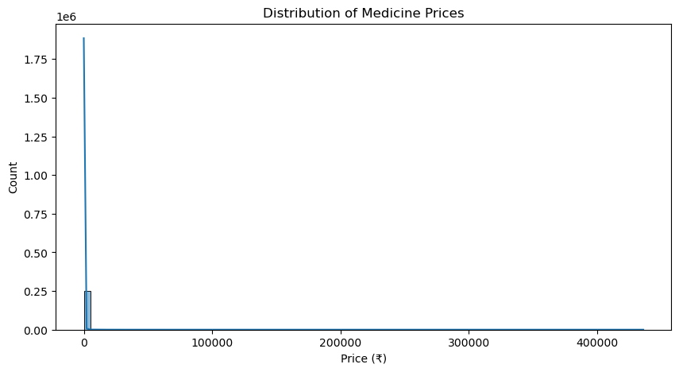
💰 Price Statistics:
count 253973.000000
mean 270.530844
std 3029.584134
min 0.000000
25% 48.000000
50% 79.000000
75% 140.000000
max 436000.000000
Name: price, dtype: float64
📉 Discontinuation Value Counts:
discontinued
False 246068
True 7905
Name: count, dtype: int64
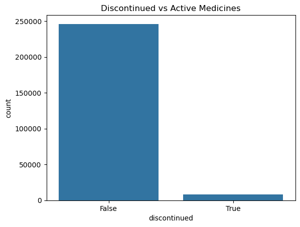
🏭 Top 12 Manufacturers:
manufacturer_name
Sun Pharmaceutical Industries Ltd 2986
Cipla Ltd 2467
Intas Pharmaceuticals Ltd 2302
Torrent Pharmaceuticals Ltd 2027
Alkem Laboratories Ltd 1809
Abbott 1777
Zydus Cadila 1768
Lupin Ltd 1735
Micro Labs Ltd 1305
Mankind Pharma Ltd 1297
Macleods Pharmaceuticals Pvt Ltd 1165
Glenmark Pharmaceuticals Ltd 1131
Name: count, dtype: int64
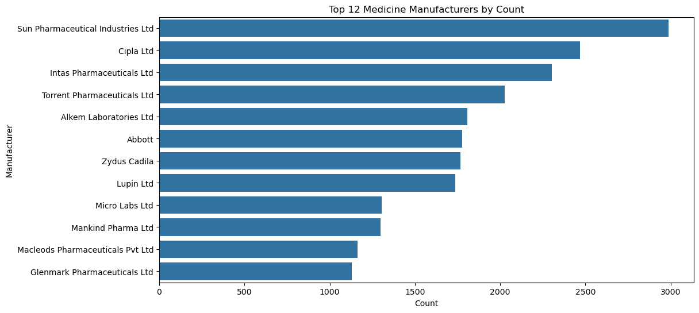
💵 Median Price by Top Manufacturer:
manufacturer_name
Mankind Pharma Ltd 76.70
Micro Labs Ltd 91.00
Abbott 95.00
Alkem Laboratories Ltd 99.50
Cipla Ltd 101.15
Torrent Pharmaceuticals Ltd 102.10
Zydus Cadila 119.25
Sun Pharmaceutical Industries Ltd 123.00
Macleods Pharmaceuticals Pvt Ltd 128.00
Glenmark Pharmaceuticals Ltd 129.00
Lupin Ltd 130.53
Intas Pharmaceuticals Ltd 133.45
Name: price, dtype: float64
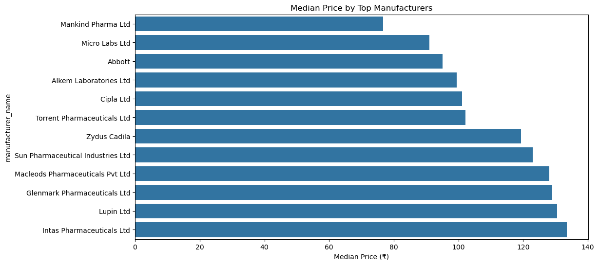
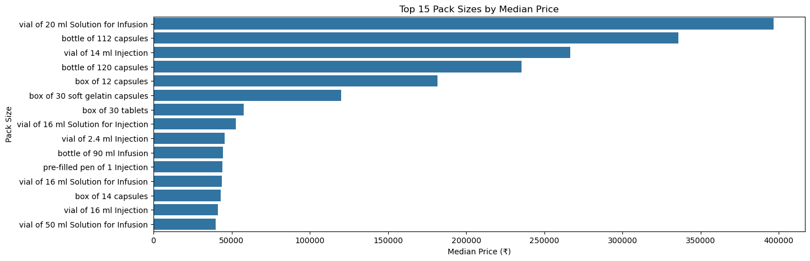
💊 Top 15 Primary Ingredients:
short_composition1
Aceclofenac (100mg) 6930
Domperidone (30mg) 5126
Cefixime (200mg) 3532
Diclofenac (50mg) 3140
Domperidone (10mg) 3088
Levocetirizine (5mg) 2656
Pantoprazole (40mg) 2643
Telmisartan (40mg) 2314
Ofloxacin (200mg) 2308
Glimepiride (2mg) 2169
Nimesulide (100mg) 2151
Amoxycillin (500mg) 2123
Rabeprazole (20mg) 2101
Azithromycin (500mg) 1997
Ofloxacin (200mg) 1988
Name: count, dtype: int64
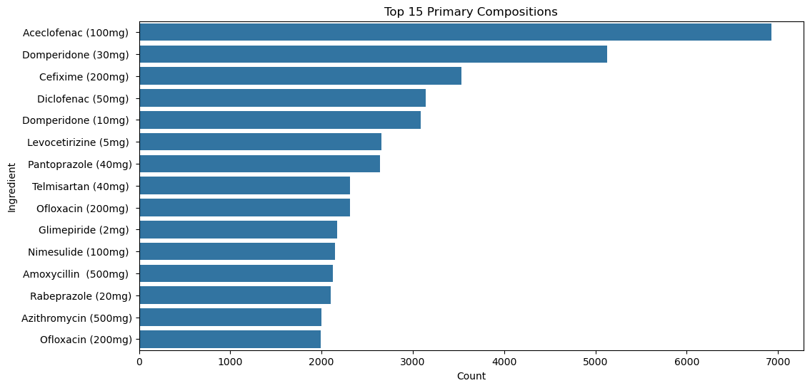
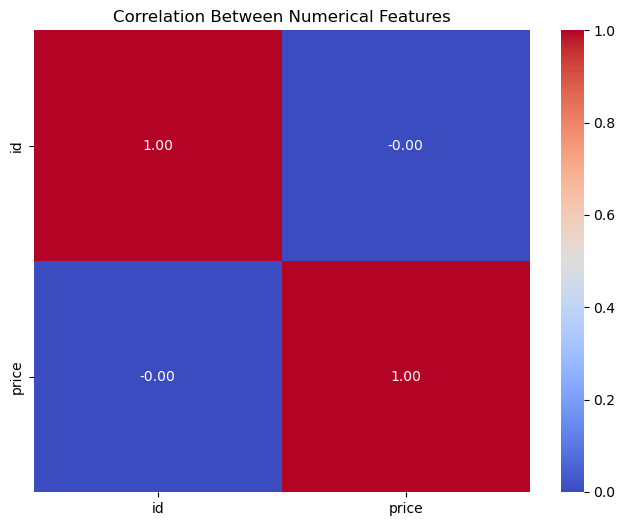
✅ Analysis Completed!
3. Initial analysis#
# PROMPT:
# Prompt: Write a Python script for a Jupyter Notebook that analyzes a pharmaceutical dataset named data/updated_indian_medicine_data.csv. The script must include the following:
# 1. Environment Setup: Implement a safe plt.style setup that tries ggplot, then falls back to seaborn (darkgrid), and finally defaults to standard matplotlib if others fail.
# 2. Pharma Giant Analysis: > * Identify the top 10 manufacturers by product count.
# - Create a dual-axis chart. The primary axis (bars) should show the Product Count, and the secondary axis (red dashed line with markers) should show the Average Price for those specific top 10 giants.
# - Ensure x-axis labels are rotated 45 degrees and use numeric positioning to prevent label mismatch.
# 3. Lifecycle Analysis: Calculate and print the total number of products, the count of discontinued products (using the Is_discontinued column), and the percentage of the total they represent.
# 4. Medicine Type Analysis: > * Generate two separate bar charts: one for the distribution (count) of type and one for the average price per type (sorted descending).
# 5. Print a summary DataFrame table combining both the Count and Average Price by type.
import pandas as pd
import matplotlib.pyplot as plt
import numpy as np
# Load the dataset
df = pd.read_csv("data/updated_indian_medicine_data.csv")
print("--- Starting Part 1: Data Analysis ---")
# --- 1. Pharma Giants: Product Count & Average Price ---
print("\n[1] Analyzing Pharma Giants...")
# Calculate product count for each manufacturer
manufacturer_counts = df["manufacturer_name"].value_counts()
top_10_manufacturers = manufacturer_counts.head(10).index
# Filter the DataFrame for only the top 10
df_top_10 = df[df["manufacturer_name"].isin(top_10_manufacturers)]
# Calculate average price for the top 10
avg_price_top_10 = (
df_top_10.groupby("manufacturer_name")["price"].mean().reindex(top_10_manufacturers)
)
# Create a combined figure for Product Count and Average Price
fig, ax1 = plt.subplots(figsize=(12, 6))
# Use numeric x positions to avoid tick/label mismatch
x = np.arange(len(top_10_manufacturers))
# Plot Product Count (Primary Axis)
ax1.bar(x, manufacturer_counts.head(10).values, alpha=0.7)
ax1.set_xlabel("Manufacturer Name")
ax1.set_ylabel("Product Count (Number of Medicines)")
ax1.set_title("Top 10 Pharma Giants by Product Count and Avg. Price", fontsize=16)
ax1.set_xticks(x)
ax1.set_xticklabels(top_10_manufacturers, rotation=45, ha="right")
# Plot Average Price (Secondary Axis)
ax2 = ax1.twinx()
ax2.plot(x, avg_price_top_10.values, color="red", marker="o", linestyle="--")
ax2.set_ylabel("Average Price (INR)", color="red")
ax2.tick_params(axis="y", labelcolor="red")
# Save the combined figure
plt.tight_layout()
plt.savefig("images/manufacturer_analysis.png", dpi=200)
plt.show()
plt.close()
# --- 2. Product Lifecycle Status: Discontinued Percentage ---
print("\n[2] Checking Product Lifecycle Status (Discontinued Products)...")
# If Is_discontinued is boolean, sum() works; if it's 0/1 ints, also works.
discontinued_count = df["Is_discontinued"].sum()
total_products = len(df)
discontinued_percentage = (discontinued_count / total_products) * 100
print(f"Total Products: {total_products}")
print(f"Discontinued Products: {discontinued_count}")
print(f"Percentage of Discontinued Products: {discontinued_percentage:.2f}%")
# --- 3. Medicine Types: Distribution and Average Price ---
print("\n[3] Analyzing Medicine Types...")
# Calculate distribution of medicine types
type_distribution = df["type"].value_counts()
# Calculate average price per medicine type
avg_price_by_type = df.groupby("type")["price"].mean().sort_values(ascending=False)
# Plot Type Distribution
plt.figure(figsize=(8, 6))
type_distribution.plot(kind="bar")
plt.title("Distribution of Medicine Types", fontsize=14)
plt.xlabel("Medicine Type")
plt.ylabel("Number of Products")
plt.xticks(rotation=45, ha="right")
plt.tight_layout()
plt.savefig("images/type_distribution.png", dpi=200)
plt.show()
plt.close()
# Plot Average Price by Type
plt.figure(figsize=(8, 6))
avg_price_by_type.plot(kind="bar", color="darkgreen")
plt.title("Average Price by Medicine Type", fontsize=14)
plt.xlabel("Medicine Type")
plt.ylabel("Average Price (INR)")
plt.xticks(rotation=45, ha="right")
plt.tight_layout()
plt.savefig("images/avg_price_by_type.png", dpi=200)
plt.show()
plt.close()
# Display key data points as a table for the user
type_analysis_df = pd.DataFrame(
{
"Count": type_distribution,
"Average Price (INR)": avg_price_by_type.reindex(type_distribution.index),
}
)
print("\n--- Medicine Type Analysis Summary ---")
print(type_analysis_df)
--- Starting Part 1: Data Analysis ---
[1] Analyzing Pharma Giants...
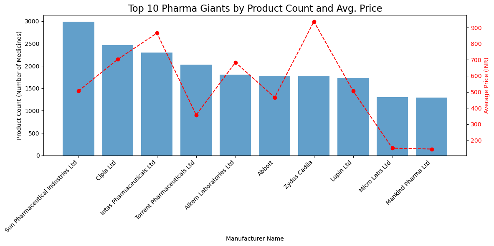
[2] Checking Product Lifecycle Status (Discontinued Products)...
Total Products: 253973
Discontinued Products: 7905
Percentage of Discontinued Products: 3.11%
[3] Analyzing Medicine Types...
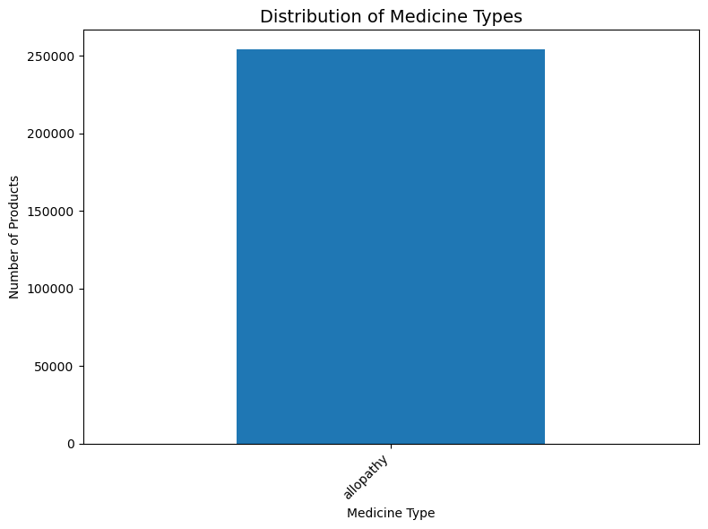
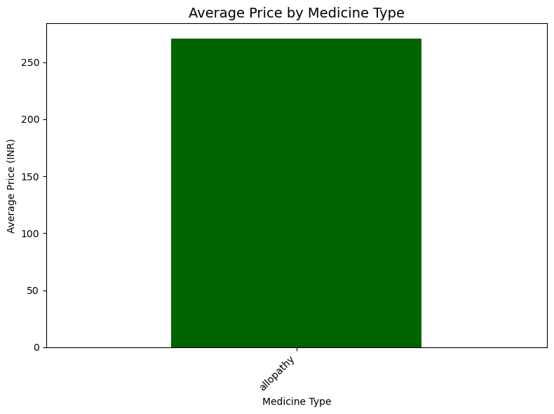
--- Medicine Type Analysis Summary ---
Count Average Price (INR)
type
allopathy 253973 270.530844
4. df = pd.read_csv(“data/updated_indian_medicine_data.csv”)#
df = pd.read_csv("data/updated_indian_medicine_data.csv")
df.sample(5)
df[df["side_effects"].notna()].sample(5)
| id | name | price | Is_discontinued | manufacturer_name | type | pack_size_label | short_composition1 | short_composition2 | salt_composition | medicine_desc | side_effects | drug_interactions | |
|---|---|---|---|---|---|---|---|---|---|---|---|---|---|
| 108938 | 108939 | Infutec NS Infusion | 30.69 | False | Infutec Healthcare Limited | allopathy | bottle of 500 ml Infusion | Sodium Chloride (0.9% w/v) | NaN | Sodium Chloride (0.9% w/v) | Infutec NS Infusion consists of purified salt ... | No common side effects seen | {"drug": [], "brand": [], "effect": []} |
| 25825 | 25826 | Buvalor 10mg Transdermal Patch | 2890.00 | False | Modi Mundi Pharma Pvt Ltd | allopathy | packet of 2 transdermal patches | Buprenorphine (10mg) | NaN | Buprenorphine (10mg) | Buvalor 10mg Transdermal Patch is used to trea... | Constipation,Dizziness,Drowsiness,Headache,Nausea | {"drug": [], "brand": [], "effect": []} |
| 43228 | 43229 | C Col 500mg Capsule | 92.30 | False | Intas Pharmaceuticals Ltd | allopathy | strip of 10 capsules | Chloramphenicol (500mg) | NaN | Chloramphenicol (500mg) | C Col 500mg Capsule is an antibiotic that figh... | Vomiting,Nausea,Diarrhea,Taste change | {"drug": ["Methylcobalamin", "Iron", "Fospheny... |
| 35569 | 35570 | Cycloxan 500mg Injection | 79.40 | False | Biochem Pharmaceutical Industries | allopathy | vial of 1 Injection | Cyclophosphamide (500mg) | NaN | Cyclophosphamide (500mg) | Cycloxan 500mg Injection is used in the treatm... | Vomiting,Nausea,Hair loss,Fever,Blood in urine... | {"drug": ["Clotrimazole", "Digoxin", "Equine R... |
| 77215 | 77216 | Ezta 10mg Tablet | 122.38 | False | Zydus Cadila | allopathy | strip of 10 tablets | Ezetimibe (10mg) | NaN | Ezetimibe (10mg) | Ezta 10mg Tablet is a medicine used to treat h... | Joint pain,Sinus inflammation,Diarrhea,Respira... | {"drug": ["Bezafibrate", "Fenofibrate", "Gemfi... |
5. Feature engineering#
import pandas as pd
import re
# Load the dataset
df = pd.read_csv("data/updated_indian_medicine_data.csv")
df_fe = df.copy()
print("--- Starting Part 2: Feature Engineering (Alchemy of Dosage) ---")
# --- Step 1: Extract Active Ingredient Name (Salt_Name) ---
# Vibe: "Reading what's *really* in the pill."
# Applying .str accessor directly to the Series.
df_fe['Salt_Name'] = df_fe['short_composition1'].str.split(' \(').str[0].str.strip()
print(f"\n[1] Extracted 'Salt_Name'. Showing top 5 unique salts:")
print(df_fe['Salt_Name'].value_counts().head(5))
# --- Step 2: Extract Dosage Value and Unit ---
# Using a single regex extraction that returns all groups.
# Regex pattern: (\d*\.?\d+)\s*([a-zA-Z]+)
regex_dosage = r'\((\d*\.?\d+)\s*([a-zA-Z]+)\)'
# Extract both groups at once
extracted_data = df_fe['short_composition1'].str.extract(regex_dosage, flags=re.IGNORECASE)
# Assign Dosage Value (Group 1)
df_fe['Dosage_Value'] = pd.to_numeric(extracted_data[0], errors='coerce')
# Assign Dosage Unit (Group 2), converted to lower case
df_fe['Dosage_Unit'] = extracted_data[1].str.lower()
# --- Step 3: Handle Multi-Component Drugs (short_composition2) ---
df_fe['Is_Multi_Salt'] = df_fe['short_composition2'].notna()
print(f"\n[2] Extracted 'Dosage_Value' and 'Dosage_Unit'.")
print(f"Products with Dosage Value: {df_fe['Dosage_Value'].notna().sum()}/{len(df_fe)}")
# --- Step 4: Final Check and Output ---
df_output = df_fe[['name', 'short_composition1', 'Salt_Name', 'Dosage_Value', 'Dosage_Unit', 'Is_Multi_Salt']].head(15)
print("\n--- Feature Engineering Results (First 15 Rows) ---")
print(df_output.to_markdown(index=False))
# Save the new DataFrame for the next ML step
df_fe.to_csv("features_engineered_medicine_data.csv", index=False)
print("\nNew data with engineered features saved to 'features_engineered_medicine_data.csv'.")
# todo fix dosage extraction for rows such as Ambroxol (30mg/5ml) - show how human analysis of the output is important
--- Starting Part 2: Feature Engineering (Alchemy of Dosage) ---
[1] Extracted 'Salt_Name'. Showing top 5 unique salts:
Salt_Name
Cefixime 8992
Domperidone 8869
Aceclofenac 8683
Amoxycillin 8550
Ofloxacin 6768
Name: count, dtype: int64
[2] Extracted 'Dosage_Value' and 'Dosage_Unit'.
Products with Dosage Value: 223054/253973
--- Feature Engineering Results (First 15 Rows) ---
| name | short_composition1 | Salt_Name | Dosage_Value | Dosage_Unit | Is_Multi_Salt |
|:--------------------------------|:--------------------------|:--------------|---------------:|:--------------|:----------------|
| Augmentin 625 Duo Tablet | Amoxycillin (500mg) | Amoxycillin | 500 | mg | True |
| Azithral 500 Tablet | Azithromycin (500mg) | Azithromycin | 500 | mg | False |
| Ascoril LS Syrup | Ambroxol (30mg/5ml) | Ambroxol | nan | nan | True |
| Allegra 120mg Tablet | Fexofenadine (120mg) | Fexofenadine | 120 | mg | False |
| Avil 25 Tablet | Pheniramine (25mg) | Pheniramine | 25 | mg | False |
| Allegra-M Tablet | Montelukast (10mg) | Montelukast | 10 | mg | True |
| Amoxyclav 625 Tablet | Amoxycillin (500mg) | Amoxycillin | 500 | mg | True |
| Azee 500 Tablet | Azithromycin (500mg) | Azithromycin | 500 | mg | False |
| Atarax 25mg Tablet | Hydroxyzine (25mg) | Hydroxyzine | 25 | mg | False |
| Ascoril D Plus Syrup Sugar Free | Phenylephrine (5mg) | Phenylephrine | 5 | mg | True |
| Aciloc 150 Tablet | Ranitidine (150mg) | Ranitidine | 150 | mg | False |
| Alex Syrup | Phenylephrine (5mg/5ml) | Phenylephrine | nan | nan | True |
| Anovate Cream | Phenylephrine (0.10% w/w) | Phenylephrine | nan | nan | True |
| Augmentin Duo Oral Suspension | Amoxycillin (200mg) | Amoxycillin | 200 | mg | True |
| Ambrodil-S Syrup | Ambroxol (15mg/5ml) | Ambroxol | nan | nan | True |
New data with engineered features saved to 'features_engineered_medicine_data.csv'.
6. import pandas as pd#
import pandas as pd
import re
# Load the dataset
df = pd.read_csv("data/updated_indian_medicine_data.csv")
df_fe = df.copy()
print("--- Starting Part 2: Feature Engineering (Alchemy of Dosage) ---")
# --- Step 1: Extract Active Ingredient Name (Salt_Name) ---
df_fe['Salt_Name'] = df_fe['short_composition1'].str.split(r'\s*\(').str[0].str.strip()
print(f"\n[1] Extracted 'Salt_Name'. Showing top 5 unique salts:")
print(df_fe['Salt_Name'].value_counts().head(5))
# --- Step 2: Extract Dosage Value and Unit (IMPROVED) ---
# Key idea: capture the FIRST "<number><unit>" after "("
# This works for:
# - (500mg)
# - (500 mg)
# - (5mg/5ml) -> captures 5 + mg
# - (0.10% w/w) -> captures 0.10 + %
#
# We intentionally do NOT require a closing ")" right after the unit.
regex_dosage = r'\(\s*(\d*\.?\d+)\s*([a-zA-Z%]+)'
extracted_data = df_fe['short_composition1'].str.extract(regex_dosage, flags=re.IGNORECASE)
df_fe['Dosage_Value'] = pd.to_numeric(extracted_data[0], errors='coerce')
df_fe['Dosage_Unit'] = extracted_data[1].str.lower()
# Optional: normalize some common variants (extend if needed)
unit_map = {
"milligram": "mg",
"milligrams": "mg",
"microgram": "mcg",
"micrograms": "mcg",
"grams": "g",
"gram": "g",
}
df_fe['Dosage_Unit'] = df_fe['Dosage_Unit'].replace(unit_map)
# --- Step 3: Handle Multi-Component Drugs (short_composition2) ---
df_fe['Is_Multi_Salt'] = df_fe['short_composition2'].notna()
print(f"\n[2] Extracted 'Dosage_Value' and 'Dosage_Unit'.")
print(f"Products with Dosage Value: {df_fe['Dosage_Value'].notna().sum()}/{len(df_fe)}")
# --- Step 4: Final Check and Output ---
df_output = df_fe[['name', 'short_composition1', 'Salt_Name', 'Dosage_Value', 'Dosage_Unit', 'Is_Multi_Salt']].head(15)
print("\n--- Feature Engineering Results (First 15 Rows) ---")
print(df_output.to_markdown(index=False))
# Save the new DataFrame for the next ML step
df_fe.to_csv("features_engineered_medicine_data.csv", index=False)
print("\nNew data with engineered features saved to 'features_engineered_medicine_data.csv'.")
--- Starting Part 2: Feature Engineering (Alchemy of Dosage) ---
[1] Extracted 'Salt_Name'. Showing top 5 unique salts:
Salt_Name
Cefixime 8992
Domperidone 8869
Aceclofenac 8683
Amoxycillin 8550
Ofloxacin 6768
Name: count, dtype: int64
[2] Extracted 'Dosage_Value' and 'Dosage_Unit'.
Products with Dosage Value: 250317/253973
--- Feature Engineering Results (First 15 Rows) ---
| name | short_composition1 | Salt_Name | Dosage_Value | Dosage_Unit | Is_Multi_Salt |
|:--------------------------------|:--------------------------|:--------------|---------------:|:--------------|:----------------|
| Augmentin 625 Duo Tablet | Amoxycillin (500mg) | Amoxycillin | 500 | mg | True |
| Azithral 500 Tablet | Azithromycin (500mg) | Azithromycin | 500 | mg | False |
| Ascoril LS Syrup | Ambroxol (30mg/5ml) | Ambroxol | 30 | mg | True |
| Allegra 120mg Tablet | Fexofenadine (120mg) | Fexofenadine | 120 | mg | False |
| Avil 25 Tablet | Pheniramine (25mg) | Pheniramine | 25 | mg | False |
| Allegra-M Tablet | Montelukast (10mg) | Montelukast | 10 | mg | True |
| Amoxyclav 625 Tablet | Amoxycillin (500mg) | Amoxycillin | 500 | mg | True |
| Azee 500 Tablet | Azithromycin (500mg) | Azithromycin | 500 | mg | False |
| Atarax 25mg Tablet | Hydroxyzine (25mg) | Hydroxyzine | 25 | mg | False |
| Ascoril D Plus Syrup Sugar Free | Phenylephrine (5mg) | Phenylephrine | 5 | mg | True |
| Aciloc 150 Tablet | Ranitidine (150mg) | Ranitidine | 150 | mg | False |
| Alex Syrup | Phenylephrine (5mg/5ml) | Phenylephrine | 5 | mg | True |
| Anovate Cream | Phenylephrine (0.10% w/w) | Phenylephrine | 0.1 | % | True |
| Augmentin Duo Oral Suspension | Amoxycillin (200mg) | Amoxycillin | 200 | mg | True |
| Ambrodil-S Syrup | Ambroxol (15mg/5ml) | Ambroxol | 15 | mg | True |
New data with engineered features saved to 'features_engineered_medicine_data.csv'.
7. TODO show the fisrt version of regression created by AI and then the improved ve#
# TODO show the fisrt version of regression created by AI and then the improved version
import pandas as pd
from sklearn.model_selection import train_test_split
from sklearn.ensemble import RandomForestRegressor
from sklearn.metrics import r2_score, mean_absolute_error
import numpy as np
import matplotlib.pyplot as plt
# --- 1. Load Data ---
# Load the data with engineered features from Part 2
try:
df = pd.read_csv("features_engineered_medicine_data.csv")
except FileNotFoundError:
print("Error: 'features_engineered_medicine_data.csv' not found. Please ensure Part 2 was executed successfully.")
exit()
print("--- Starting Part 3: Machine Learning (Price Prediction) ---")
# --- 2. Data Cleaning and Preparation ---
# Drop rows where critical features (Dosage or Salt) are missing
df.dropna(subset=['Dosage_Value', 'Salt_Name'], inplace=True)
# Remove outliers in price (e.g., top 1%) for a more robust model of typical prices
price_threshold = df['price'].quantile(0.99)
df = df[df['price'] < price_threshold]
# --- 3. Feature Selection and Categorical Handling (Top N Encoding) ---
N_CATEGORIES = 50
# Target Variable
Y = df['price']
# Features
X = df[['Dosage_Value', 'Is_Multi_Salt', 'Salt_Name', 'manufacturer_name', 'Dosage_Unit']]
# Handle 'Salt_Name' (Vibe: "Does the ingredient type drive the price?")
top_salts = X['Salt_Name'].value_counts().head(N_CATEGORIES).index
X['Salt_Name_Grouped'] = np.where(X['Salt_Name'].isin(top_salts), X['Salt_Name'], 'Other_Salt')
# Handle 'manufacturer_name' (Vibe: "Does the brand name drive the price?")
top_manufacturers = X['manufacturer_name'].value_counts().head(N_CATEGORIES).index
X['Manufacturer_Grouped'] = np.where(X['manufacturer_name'].isin(top_manufacturers), X['manufacturer_name'], 'Other_Manufacturer')
# Drop original high-cardinality columns
X = X.drop(columns=['Salt_Name', 'manufacturer_name'])
# Apply One-Hot Encoding to the grouped categorical columns
X_encoded = pd.get_dummies(X, columns=['Salt_Name_Grouped', 'Manufacturer_Grouped', 'Dosage_Unit'], drop_first=True)
print(f"\n[1] Data Prepared. Total Features (Columns): {X_encoded.shape[1]}")
# --- 4. Model Training ---
# Split the data
X_train, X_test, Y_train, Y_test = train_test_split(X_encoded, Y, test_size=0.2, random_state=42)
# Train a powerful yet interpretable model: Random Forest Regressor
# Vibe: "The Price Crystal Ball"
model = RandomForestRegressor(n_estimators=100, max_depth=10, random_state=42, n_jobs=-1)
model.fit(X_train, Y_train)
# --- 5. Model Evaluation ---
Y_pred = model.predict(X_test)
r2 = r2_score(Y_test, Y_pred)
mae = mean_absolute_error(Y_test, Y_pred)
rmse = np.sqrt(np.mean((Y_test - Y_pred)**2))
print(f"\n[2] Model Evaluation (Random Forest Regressor):")
print(f"R-squared (R²): {r2:.4f} (How much variance is explained by the model)")
print(f"Mean Absolute Error (MAE): {mae:.2f} INR (Average error in price prediction)")
print(f"Root Mean Square Error (RMSE): {rmse:.2f} INR")
# --- 5b. Predicted vs Actual Plot ---
plt.figure(figsize=(8, 8))
plt.scatter(Y_test, Y_pred, alpha=0.4)
plt.title('Predicted vs Actual Drug Price', fontsize=14)
plt.xlabel('Actual Price (INR)', fontsize=12)
plt.ylabel('Predicted Price (INR)', fontsize=12)
# y = x reference line
min_v = min(Y_test.min(), Y_pred.min())
max_v = max(Y_test.max(), Y_pred.max())
plt.plot([min_v, max_v], [min_v, max_v], linestyle='--')
plt.tight_layout()
plt.savefig('images/predicted_vs_actual.png', dpi=200)
plt.show()
plt.close()
print("\nPredicted vs actual plot saved to 'predicted_vs_actual.png'.")
residuals = Y_test - Y_pred
plt.figure(figsize=(10, 5))
plt.scatter(Y_pred, residuals, alpha=0.4)
plt.axhline(0, linestyle='--')
plt.title('Residuals vs Predicted', fontsize=14)
plt.xlabel('Predicted Price (INR)', fontsize=12)
plt.ylabel('Residual (Actual - Predicted)', fontsize=12)
plt.tight_layout()
plt.savefig('images/residuals_vs_predicted.png', dpi=200)
plt.show()
plt.close()
print("Residuals plot saved to 'residuals_vs_predicted.png'.")
# --- 6. Model Interpretation (Feature Importance) ---
# Vibe: "Peeking into the AI's Mind: What truly drives the cost?"
feature_importances = pd.Series(model.feature_importances_, index=X_encoded.columns)
top_10_importances = feature_importances.sort_values(ascending=False).head(10)
print("\n[3] Feature Importance (Top 10 Drivers of Price):")
print(top_10_importances.to_markdown())
# Save importance plot
plt.figure(figsize=(10, 6))
top_10_importances.plot(kind='bar')
plt.title('Top 10 Features Driving Drug Price', fontsize=14)
plt.ylabel('Feature Importance Score')
plt.xticks(rotation=45, ha='right')
plt.tight_layout()
plt.savefig('images/price_feature_importance.png', dpi=200)
plt.show()
plt.close()
print("\nFeature importance visualization saved to 'price_feature_importance.png'.")
--- Starting Part 3: Machine Learning (Price Prediction) ---
[1] Data Prepared. Total Features (Columns): 131
/var/folders/w1/_ftnzz4s0jdb0cyn80m370dr0000gn/T/ipykernel_73888/3248731772.py:41: SettingWithCopyWarning:
A value is trying to be set on a copy of a slice from a DataFrame.
Try using .loc[row_indexer,col_indexer] = value instead
See the caveats in the documentation: https://pandas.pydata.org/pandas-docs/stable/user_guide/indexing.html#returning-a-view-versus-a-copy
X['Salt_Name_Grouped'] = np.where(X['Salt_Name'].isin(top_salts), X['Salt_Name'], 'Other_Salt')
/var/folders/w1/_ftnzz4s0jdb0cyn80m370dr0000gn/T/ipykernel_73888/3248731772.py:45: SettingWithCopyWarning:
A value is trying to be set on a copy of a slice from a DataFrame.
Try using .loc[row_indexer,col_indexer] = value instead
See the caveats in the documentation: https://pandas.pydata.org/pandas-docs/stable/user_guide/indexing.html#returning-a-view-versus-a-copy
X['Manufacturer_Grouped'] = np.where(X['manufacturer_name'].isin(top_manufacturers), X['manufacturer_name'], 'Other_Manufacturer')
[2] Model Evaluation (Random Forest Regressor):
R-squared (R²): 0.3744 (How much variance is explained by the model)
Mean Absolute Error (MAE): 77.50 INR (Average error in price prediction)
Root Mean Square Error (RMSE): 179.69 INR
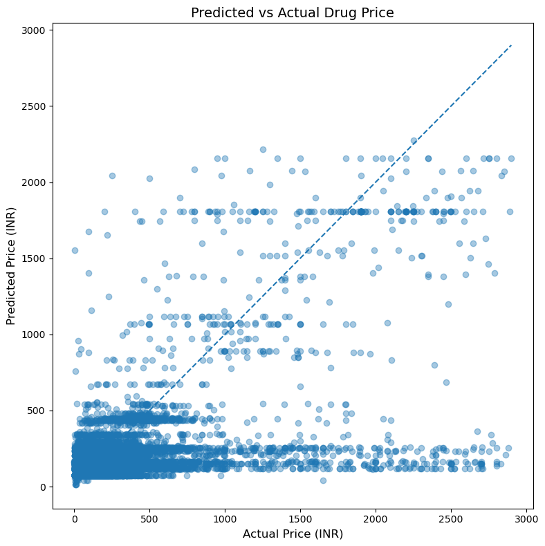
Predicted vs actual plot saved to 'predicted_vs_actual.png'.
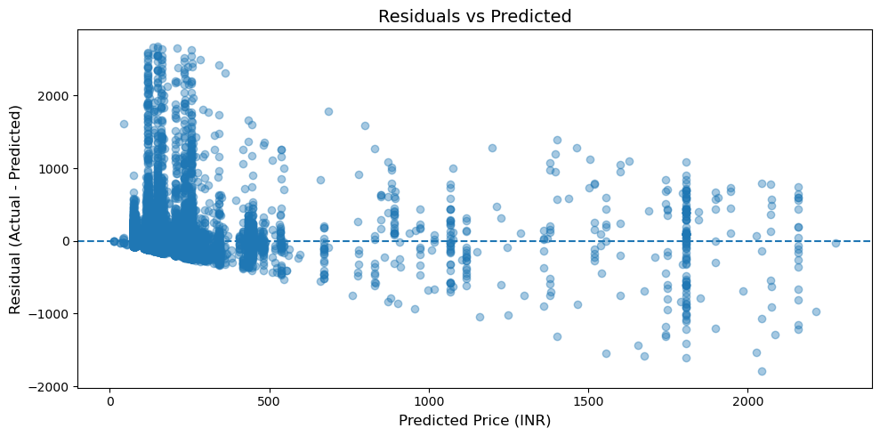
Residuals plot saved to 'residuals_vs_predicted.png'.
[3] Feature Importance (Top 10 Drivers of Price):
| | 0 |
|:----------------------------------------|----------:|
| Salt_Name_Grouped_Meropenem | 0.38554 |
| Dosage_Value | 0.249324 |
| Dosage_Unit_iu | 0.0837179 |
| Dosage_Unit_million | 0.0526087 |
| Salt_Name_Grouped_Other_Salt | 0.0481579 |
| Salt_Name_Grouped_Cefuroxime | 0.0352065 |
| Dosage_Unit_mcg | 0.0236404 |
| Is_Multi_Salt | 0.0191302 |
| Manufacturer_Grouped_Other_Manufacturer | 0.0114889 |
| Salt_Name_Grouped_Methylprednisolone | 0.0114739 |
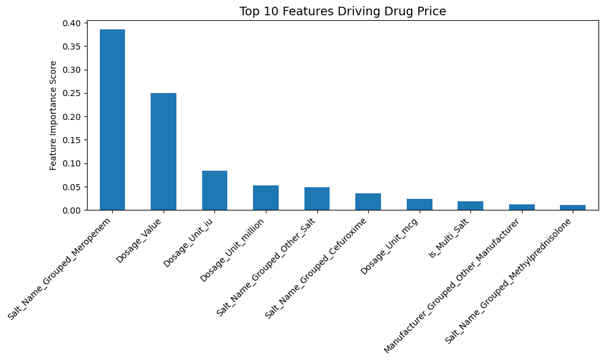
Feature importance visualization saved to 'price_feature_importance.png'.
8. Y_train#
Y_train
92774 150.00
120338 60.00
100295 66.00
93231 49.00
170395 54.00
...
123113 79.47
106504 216.00
135459 1450.00
150744 152.30
125269 35.00
Name: price, Length: 198250, dtype: float64
9. The improved version#
# The improved version
import pandas as pd
from sklearn.model_selection import train_test_split
from sklearn.ensemble import HistGradientBoostingRegressor
from sklearn.metrics import r2_score, mean_absolute_error
from sklearn.inspection import permutation_importance
import numpy as np
import matplotlib.pyplot as plt
# --- 1. Load Data ---
try:
df = pd.read_csv("features_engineered_medicine_data.csv")
except FileNotFoundError:
print("Error: 'features_engineered_medicine_data.csv' not found. Please ensure Part 2 was executed successfully.")
exit()
print("--- Starting Part 3: Machine Learning (Price Prediction) ---")
# --- 2. Data Cleaning and Preparation ---
# Drop rows where critical features are missing
df.dropna(subset=['Dosage_Value', 'Dosage_Unit', 'Salt_Name', 'manufacturer_name', 'price'], inplace=True)
# Remove extreme outliers in price (top 1%)
price_threshold = df['price'].quantile(0.99)
df = df[df['price'] < price_threshold]
# Normalize dosage units into mg-equivalent
DOSAGE_MULTIPLIER = {
'mg': 1.0,
'g': 1000.0,
'mcg': 0.001,
'ug': 0.001, # sometimes micrograms appear as ug
'iu': np.nan, # unknown conversion; will be dropped
}
df['Dosage_Unit'] = df['Dosage_Unit'].astype(str).str.lower().str.strip()
df['Dosage_mg'] = df['Dosage_Value'] * df['Dosage_Unit'].map(DOSAGE_MULTIPLIER)
# Drop rows where we couldn't convert dosage to mg
df.dropna(subset=['Dosage_mg'], inplace=True)
# --- 3. Feature Selection and Categorical Handling (Top N Encoding) ---
N_CATEGORIES = 50
# Target: log1p(price) for better modeling
Y = np.log1p(df['price'])
# Features
X = df[['Dosage_mg', 'Is_Multi_Salt', 'Salt_Name', 'manufacturer_name']].copy()
# Group top salts
top_salts = X['Salt_Name'].value_counts().head(N_CATEGORIES).index
X['Salt_Name_Grouped'] = np.where(X['Salt_Name'].isin(top_salts), X['Salt_Name'], 'Other_Salt')
# Group top manufacturers
top_manufacturers = X['manufacturer_name'].value_counts().head(N_CATEGORIES).index
X['Manufacturer_Grouped'] = np.where(
X['manufacturer_name'].isin(top_manufacturers),
X['manufacturer_name'],
'Other_Manufacturer'
)
# Optional: salt seen at strength buckets (interaction-ish)
X['Dosage_Bin'] = pd.qcut(X['Dosage_mg'], q=5, duplicates='drop').astype(str)
X['Salt_x_DosageBin'] = X['Salt_Name_Grouped'].astype(str) + "_" + X['Dosage_Bin'].astype(str)
# Drop originals (high cardinality)
X = X.drop(columns=['Salt_Name', 'manufacturer_name', 'Dosage_Bin'])
# One-hot encode categoricals
X_encoded = pd.get_dummies(
X,
columns=['Salt_Name_Grouped', 'Manufacturer_Grouped', 'Salt_x_DosageBin'],
drop_first=True
)
print(f"\n[1] Data Prepared. Total Features (Columns): {X_encoded.shape[1]}")
print(f"Rows used for training: {len(X_encoded)}")
# --- 4. Model Training ---
X_train, X_test, Y_train, Y_test = train_test_split(
X_encoded, Y, test_size=0.2, random_state=42
)
# Gradient boosting generally beats RF on tabular problems like this
model = HistGradientBoostingRegressor(
max_depth=8,
learning_rate=0.05,
max_iter=400,
random_state=42
)
model.fit(X_train, Y_train)
# --- 5. Model Evaluation (report in INR scale) ---
Y_pred_log = model.predict(X_test)
# Convert back to INR
Y_test_inr = np.expm1(Y_test)
Y_pred_inr = np.expm1(Y_pred_log)
r2 = r2_score(Y_test_inr, Y_pred_inr)
mae = mean_absolute_error(Y_test_inr, Y_pred_inr)
rmse = np.sqrt(np.mean((Y_test_inr - Y_pred_inr) ** 2))
print(f"\n[2] Model Evaluation (HistGradientBoostingRegressor + log1p target):")
print(f"R-squared (R²): {r2:.4f}")
print(f"Mean Absolute Error (MAE): {mae:.2f} INR")
print(f"Root Mean Square Error (RMSE): {rmse:.2f} INR")
# --- 5b. Predicted vs Actual Plot ---
plt.figure(figsize=(8, 8))
plt.scatter(Y_test_inr, Y_pred_inr, alpha=0.4)
plt.title('Predicted vs Actual Drug Price', fontsize=14)
plt.xlabel('Actual Price (INR)', fontsize=12)
plt.ylabel('Predicted Price (INR)', fontsize=12)
min_v = float(min(Y_test_inr.min(), Y_pred_inr.min()))
max_v = float(max(Y_test_inr.max(), Y_pred_inr.max()))
plt.plot([min_v, max_v], [min_v, max_v], linestyle='--')
plt.tight_layout()
plt.savefig('images/predicted_vs_actual.png', dpi=200)
plt.show()
plt.close()
print("\nPredicted vs actual plot saved to 'predicted_vs_actual.png'.")
# Residuals plot
residuals = Y_test_inr - Y_pred_inr
plt.figure(figsize=(10, 5))
plt.scatter(Y_pred_inr, residuals, alpha=0.4)
plt.axhline(0, linestyle='--')
plt.title('Residuals vs Predicted', fontsize=14)
plt.xlabel('Predicted Price (INR)', fontsize=12)
plt.ylabel('Residual (Actual - Predicted)', fontsize=12)
plt.tight_layout()
plt.savefig('images/residuals_vs_predicted.png', dpi=200)
plt.show()
plt.close()
print("Residuals plot saved to 'residuals_vs_predicted.png'.")
# --- 6. Model Interpretation (Permutation Importance) ---
# (HGBR doesn't have feature_importances_, so we use permutation importance.)
print("\n[3] Permutation Importance (Top 10 Drivers of Price):")
perm = permutation_importance(
model,
X_test,
Y_test, # IMPORTANT: use log-space here because the model was trained on it
n_repeats=8,
random_state=42,
n_jobs=-1
)
importances = pd.Series(perm.importances_mean, index=X_encoded.columns).sort_values(ascending=False)
top_10 = importances.head(10)
print(top_10.to_string())
plt.figure(figsize=(10, 6))
top_10.plot(kind='bar')
plt.title('Top 10 Features Driving Drug Price (Permutation Importance)', fontsize=14)
plt.ylabel('Importance (Δ score when permuted)')
plt.xticks(rotation=45, ha='right')
plt.tight_layout()
plt.savefig('images/price_feature_importance.png', dpi=200)
plt.show()
plt.close()
print("\nFeature importance visualization saved to 'price_feature_importance.png'.")
--- Starting Part 3: Machine Learning (Price Prediction) ---
[1] Data Prepared. Total Features (Columns): 293
Rows used for training: 228857
[2] Model Evaluation (HistGradientBoostingRegressor + log1p target):
R-squared (R²): 0.2921
Mean Absolute Error (MAE): 57.98 INR
Root Mean Square Error (RMSE): 181.50 INR
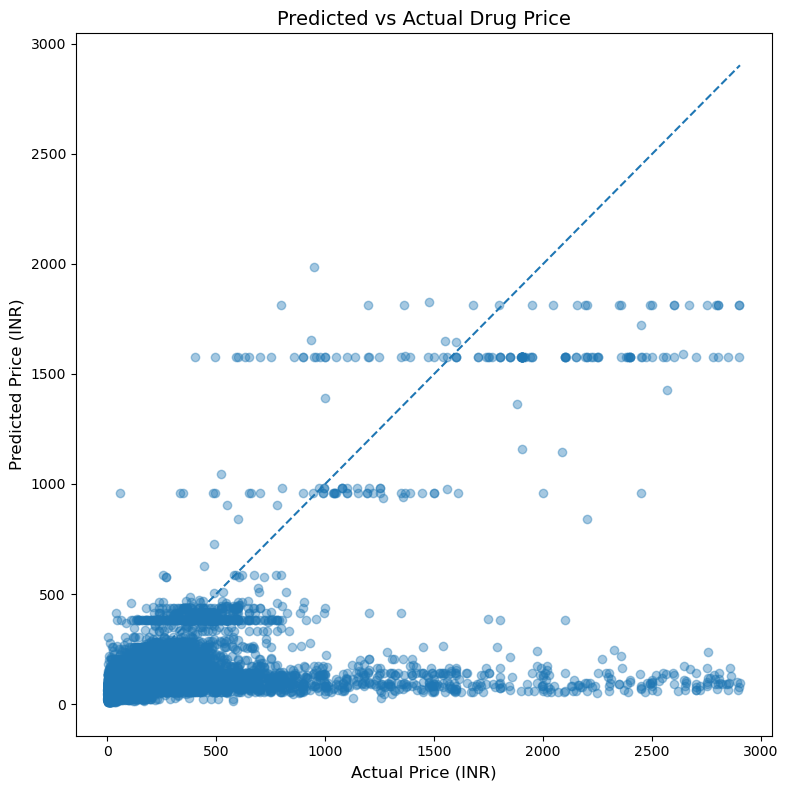
Predicted vs actual plot saved to 'predicted_vs_actual.png'.
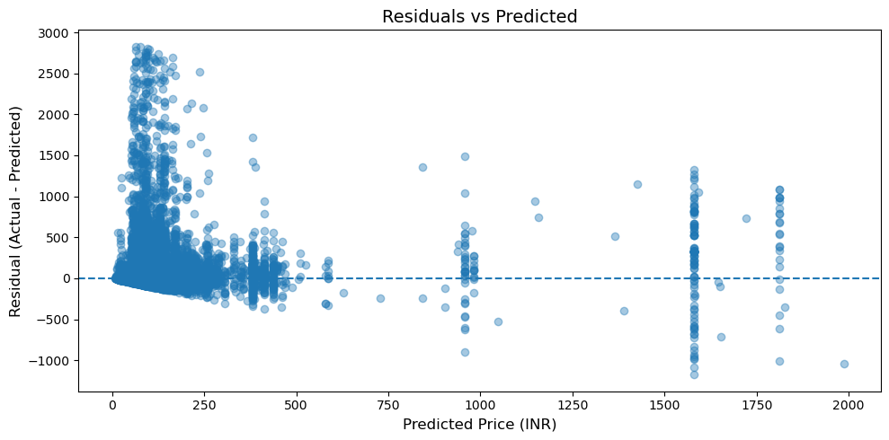
Residuals plot saved to 'residuals_vs_predicted.png'.
[3] Permutation Importance (Top 10 Drivers of Price):
/opt/miniconda3/envs/drug_analysis/lib/python3.10/site-packages/joblib/externals/loky/process_executor.py:782: UserWarning: A worker stopped while some jobs were given to the executor. This can be caused by a too short worker timeout or by a memory leak.
warnings.warn(
Dosage_mg 0.312923
Is_Multi_Salt 0.138200
Salt_Name_Grouped_Meropenem 0.050958
Salt_Name_Grouped_Other_Salt 0.043527
Salt_Name_Grouped_Cefuroxime 0.035033
Salt_Name_Grouped_Diclofenac 0.031167
Salt_Name_Grouped_Paracetamol 0.023768
Salt_Name_Grouped_Nimesulide 0.021190
Salt_Name_Grouped_Itraconazole 0.014307
Salt_Name_Grouped_Atorvastatin 0.013955
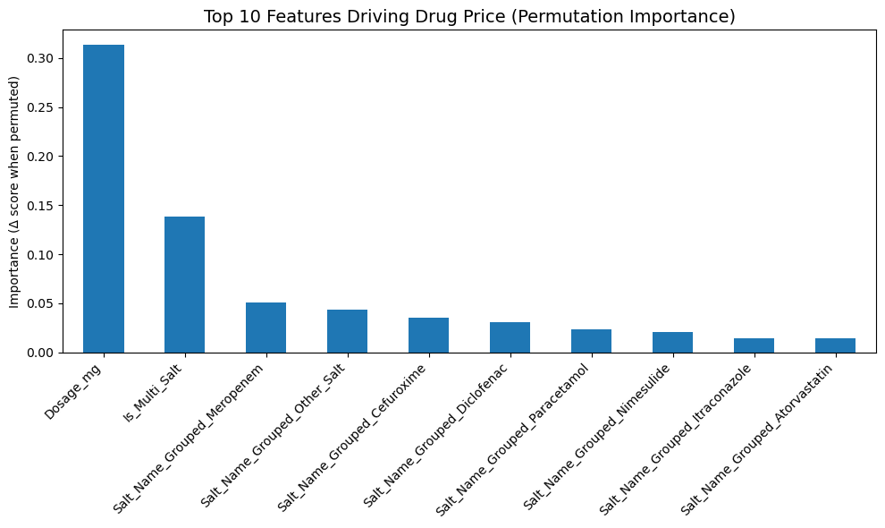
Feature importance visualization saved to 'price_feature_importance.png'.
10. ==========================================#
# ==========================================
# PART 4: DEEP LEARNING (NLP)
# ==========================================
import pandas as pd
import numpy as np
import re
import ast
import os
import matplotlib.pyplot as plt
import seaborn as sns
from sklearn.model_selection import train_test_split
from sklearn.metrics import classification_report, confusion_matrix
from sklearn.utils.class_weight import compute_class_weight
from tensorflow.keras.preprocessing.text import Tokenizer
from tensorflow.keras.preprocessing.sequence import pad_sequences
from tensorflow.keras.models import Sequential
from tensorflow.keras.layers import Embedding, GRU, Dense, Dropout, SpatialDropout1D
from tensorflow.keras.callbacks import EarlyStopping, ReduceLROnPlateau
print("--- Starting Part 4: Deep Learning (Digital Guardian Angel) ---")
# --------------------------
# 1) TEXT CLEANING (shared)
# --------------------------
def clean_text_keep_dosage(x: str) -> str:
"""
Keep letters + digits + a few dosage-friendly symbols.
This helps preserve dataset patterns like '500', '0.25mg', 'DT', etc.
"""
x = str(x).lower()
# Keep: a-z, 0-9, whitespace, . - % /
x = re.sub(r'[^a-z0-9\s\.\-\%\/]', ' ', x)
x = re.sub(r'\s+', ' ', x).strip()
return x
# --------------------------
# 2) DATA LOAD & TARGETING
# --------------------------
df = pd.read_csv("data/updated_indian_medicine_data.csv")
df_dl = df.dropna(subset=['drug_interactions', 'medicine_desc', 'side_effects']).copy()
def check_high_risk(interaction_str):
try:
data = ast.literal_eval(interaction_str)
effects = data.get('effect', [])
s = str(effects).upper()
return 1 if ("LIFE-THREATENING" in s or "SERIOUS" in s) else 0
except Exception:
return 0
df_dl['High_Risk'] = df_dl['drug_interactions'].apply(check_high_risk)
Y = df_dl['High_Risk'].astype(int).values
print("Class distribution:")
print(df_dl['High_Risk'].value_counts())
print(df_dl['High_Risk'].value_counts(normalize=True))
# --------------------------
# 3) TEXT TO NUMBERS
# --------------------------
X_text = (df_dl['medicine_desc'].astype(str) + ' ' + df_dl['side_effects'].astype(str)).apply(clean_text_keep_dosage)
# Bigger vocab + slightly longer sequences (medical text is sparse)
MAX_WORDS = 20000
MAX_LEN = 180
tokenizer = Tokenizer(num_words=MAX_WORDS, oov_token='<UNK>')
tokenizer.fit_on_texts(X_text)
sequences = tokenizer.texts_to_sequences(X_text)
X_padded = pad_sequences(sequences, maxlen=MAX_LEN, padding='post', truncating='post')
# --------------------------
# 4) BUILDING & TRAINING
# --------------------------
X_train, X_test, Y_train, Y_test = train_test_split(
X_padded, Y, test_size=0.2, random_state=42, stratify=Y
)
# Class weights (balanced training)
classes = np.array([0, 1])
weights = compute_class_weight(class_weight='balanced', classes=classes, y=Y_train)
class_weight = {0: float(weights[0]), 1: float(weights[1])}
print("class_weight:", class_weight)
model = Sequential([
Embedding(MAX_WORDS, 64, input_length=MAX_LEN),
SpatialDropout1D(0.25),
GRU(96, dropout=0.25, recurrent_dropout=0.25),
Dropout(0.25),
Dense(1, activation='sigmoid')
])
model.compile(optimizer='adam', loss='binary_crossentropy', metrics=['accuracy'])
callbacks = [
EarlyStopping(monitor='val_loss', patience=4, restore_best_weights=True),
ReduceLROnPlateau(monitor='val_loss', factor=0.5, patience=2, min_lr=1e-6)
]
print("\n[Vibe Check] Training the model.")
history = model.fit(
X_train, Y_train,
epochs=25,
batch_size=32,
validation_split=0.1,
class_weight=class_weight,
callbacks=callbacks,
verbose=1
)
# --------------------------
# 5) EVALUATION
# --------------------------
test_probs = model.predict(X_test, verbose=0).ravel()
Y_pred = (test_probs > 0.5).astype(int)
print("\nProb stats on test set:")
print("min:", float(np.min(test_probs)), "mean:", float(np.mean(test_probs)), "max:", float(np.max(test_probs)))
print("avg prob when true label=0:", float(np.mean(test_probs[Y_test == 0])))
print("avg prob when true label=1:", float(np.mean(test_probs[Y_test == 1])))
print("\n--- Final Truth Test (Classification Report) ---")
print(classification_report(Y_test, Y_pred))
plt.figure(figsize=(7,5))
sns.heatmap(confusion_matrix(Y_test, Y_pred), annot=True, fmt='d', cmap='Blues')
plt.title('Guardian Angel Decision Matrix')
plt.xlabel('Predicted Risk')
plt.ylabel('Actual Risk')
plt.savefig("images/classification_accuracy.png", dpi=200)
plt.show()
--- Starting Part 4: Deep Learning (Digital Guardian Angel) ---
Class distribution:
High_Risk
0 4848
1 2640
Name: count, dtype: int64
High_Risk
0 0.647436
1 0.352564
Name: proportion, dtype: float64
class_weight: {0: 0.7723053120165033, 1: 1.418087121212121}
[Vibe Check] Training the model.
Epoch 1/25
/opt/miniconda3/envs/drug_analysis/lib/python3.10/site-packages/keras/src/layers/core/embedding.py:97: UserWarning: Argument `input_length` is deprecated. Just remove it.
warnings.warn(
169/169 ━━━━━━━━━━━━━━━━━━━━ 19s 103ms/step - accuracy: 0.6398 - loss: 0.5910 - val_accuracy: 0.7913 - val_loss: 0.4691 - learning_rate: 0.0010
Epoch 2/25
169/169 ━━━━━━━━━━━━━━━━━━━━ 18s 104ms/step - accuracy: 0.8390 - loss: 0.3818 - val_accuracy: 0.7997 - val_loss: 0.3884 - learning_rate: 0.0010
Epoch 3/25
169/169 ━━━━━━━━━━━━━━━━━━━━ 18s 108ms/step - accuracy: 0.8898 - loss: 0.2802 - val_accuracy: 0.8898 - val_loss: 0.2827 - learning_rate: 0.0010
Epoch 4/25
169/169 ━━━━━━━━━━━━━━━━━━━━ 18s 105ms/step - accuracy: 0.9210 - loss: 0.2135 - val_accuracy: 0.9082 - val_loss: 0.2362 - learning_rate: 0.0010
Epoch 5/25
169/169 ━━━━━━━━━━━━━━━━━━━━ 18s 108ms/step - accuracy: 0.9306 - loss: 0.1885 - val_accuracy: 0.9149 - val_loss: 0.2371 - learning_rate: 0.0010
Epoch 6/25
169/169 ━━━━━━━━━━━━━━━━━━━━ 18s 108ms/step - accuracy: 0.9434 - loss: 0.1541 - val_accuracy: 0.9399 - val_loss: 0.1949 - learning_rate: 0.0010
Epoch 7/25
169/169 ━━━━━━━━━━━━━━━━━━━━ 18s 104ms/step - accuracy: 0.9508 - loss: 0.1270 - val_accuracy: 0.9499 - val_loss: 0.1735 - learning_rate: 0.0010
Epoch 8/25
169/169 ━━━━━━━━━━━━━━━━━━━━ 18s 107ms/step - accuracy: 0.9614 - loss: 0.1047 - val_accuracy: 0.9549 - val_loss: 0.1637 - learning_rate: 0.0010
Epoch 9/25
169/169 ━━━━━━━━━━━━━━━━━━━━ 17s 103ms/step - accuracy: 0.9631 - loss: 0.0937 - val_accuracy: 0.9549 - val_loss: 0.1600 - learning_rate: 0.0010
Epoch 10/25
169/169 ━━━━━━━━━━━━━━━━━━━━ 17s 103ms/step - accuracy: 0.9690 - loss: 0.0839 - val_accuracy: 0.9382 - val_loss: 0.2140 - learning_rate: 0.0010
Epoch 11/25
169/169 ━━━━━━━━━━━━━━━━━━━━ 18s 105ms/step - accuracy: 0.9729 - loss: 0.0797 - val_accuracy: 0.9533 - val_loss: 0.1757 - learning_rate: 0.0010
Epoch 12/25
169/169 ━━━━━━━━━━━━━━━━━━━━ 17s 103ms/step - accuracy: 0.9759 - loss: 0.0610 - val_accuracy: 0.9599 - val_loss: 0.1642 - learning_rate: 5.0000e-04
Epoch 13/25
169/169 ━━━━━━━━━━━━━━━━━━━━ 18s 107ms/step - accuracy: 0.9826 - loss: 0.0524 - val_accuracy: 0.9599 - val_loss: 0.1795 - learning_rate: 5.0000e-04
Prob stats on test set:
min: 2.581242142696283e-06 mean: 0.3600941300392151 max: 0.9999959468841553
avg prob when true label=0: 0.055717263370752335
avg prob when true label=1: 0.9192712903022766
--- Final Truth Test (Classification Report) ---
precision recall f1-score support
0 0.96 0.96 0.96 970
1 0.93 0.93 0.93 528
accuracy 0.95 1498
macro avg 0.94 0.94 0.94 1498
weighted avg 0.95 0.95 0.95 1498
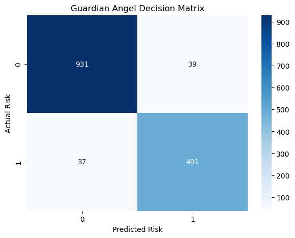
11. pd.set_option(‘display.max_colwidth’, None)#
pd.set_option('display.max_colwidth', None)
print(df['medicine_desc'])
df['medicine_desc'].head(10)
0 Augmentin 625 Duo Tablet is a penicillin-type of antibiotic that helps your body fight infections caused by bacteria. It is used to treat infections of the lungs (e.g., pneumonia), ear, nasal sinus, urinary tract, skin and soft tissue. It will not work for viral infections such as the common cold.Augmentin 625 Duo Tablet is best taken with a meal to reduce the chance of a stomach upset. You should take it regularly at evenly spaced intervals as per the schedule prescribed by your doctor. Taking it at the same time every day will help you to remember to take it. The dose will depend on what you are being treated for, but you should always complete a full course of this antibiotic as prescribed by your doctor. Do not stop taking it until you have finished, even when you feel better. If you stop taking it early, some bacteria may survive and the infection may come back or worsen.The most common side effects of this medicine include vomiting, nausea, and diarrhea. These are usually mild but let your doctor know if they bother you or will not go away.Before taking it, let your doctor know if you are allergic to any antibiotics or have any kidney or liver problems. You should also let your healthcare team know about all other medicines you are taking as they may affect, or be affected by, this medicine. This medicine is generally regarded as safe to use during pregnancy and breastfeeding if prescribed by a doctor.
1 Azithral 500 Tablet is an antibiotic used to treat various types of bacterial infections of the respiratory tract, ear, nose, throat, lungs, skin, and eye in adults and children. It is also effective in typhoid fever and some sexually transmitted diseases like gonorrhea.Azithral 500 Tablet is a broad-spectrum type of antibiotic effective in killing many types of gram-positive bacteria, some types of gram-negative bacteria and other microorganisms. This medicine is taken orally, preferably either one hour before or 2 hours after a meal. It should be used regularly at evenly spaced time intervals as prescribed by your doctor. Do not skip any doses and finish the full course of treatment even if you feel better. Stopping the medicine too early may lead to the return or worsening of the infection.Commonly seen side effects seen with this medicine include vomiting, nausea, stomach pain, and diarrhea. These are usually temporary and subside with the completion of treatment. Consult your doctor if you find these side effects worry you or persist for a longer duration.Inform your doctor if you have any previous history of allergy or heart problems before taking this medicine. Pregnant or breastfeeding women should consult their doctor before using this medicine.
2 Ascoril LS Syrup is a combination medicine used in the treatment of cough with mucus. It thins mucus in the nose, windpipe and lungs, making it easier to cough out. It also provides relief from runny nose, sneezing, itching, and watery eyes.Ascoril LS Syrup is taken with or without food in a dose and duration as advised by the doctor. The dose you are given will depend on your condition and how you respond to the medicine. You should keep taking this medicine for as long as your doctor recommends. If you stop treatment too early your symptoms may come back and your condition may worsen. Let your healthcare team know about all other medications you are taking as some may affect, or be affected by this medicine.The most common side effects are nausea, diarrhea, stomach pain, vomiting, muscle cramp, headache, skin rash, and increased heart rate. Most of these are temporary and usually resolve with time. Contact your doctor straight away if you are at all concerned about any of these side effects. This medicine can also cause sleepiness, so do not drive or do anything that requires mental focus until you know how this medicine affects you. Avoid drinking alcohol while taking this medicine as it can make sleepiness worse.Never support self-medication or recommend your medicine to another person. It is beneficial to have plenty of fluids while taking this medication. Before taking this medicine, you should tell your doctor if you are pregnant, planning pregnancy or breastfeeding. You should also tell your doctor if you have any kidney or liver diseases so that your doctor can prescribe a suitable dose for you.
3 Allegra 120mg Tablet is an anti-allergy medicine used in the treatment of allergic symptoms such as runny nose, congestion or stuffiness, sneezing, itching, swelling, and watery eyes. It also helps treat skin allergies with itching, redness or swelling.Allegra 120mg Tablet may be taken with or without food, in the dose and duration as advised by the doctor. The dose you are given will depend on your condition and how you respond to the medicine. You should keep taking this medicine for as long as your doctor recommends. Do not stop taking it without consulting your doctor.The most common side effects are headache, drowsiness, dizziness, and nausea. Most of these are temporary and usually resolve with time. Please consult your doctor if any of these side effects do not resolve or persist for a longer duration.Do not self-medicate or recommend your medicine to another person even if you see the similarity in symptoms. Consult your doctor to get the most benefit. Inform your doctor if you are suffering from any problems related to the kidneys, liver, or heart. Pregnant and breastfeeding mothers should not take this medicine without consulting a doctor.
4 Avil 25 Tablet is an antiallergic medication used in the treatment of various allergic conditions. It provides relief from runny nose, sneezing, congestion, itching and watery eyes.Avil 25 Tablet should be taken with food, but take it at the same time every day to get the most benefit. The dose and how often you take it depends on what you are taking it for. Your doctor will decide how much you need to improve your symptoms. You should take this medicine for as long as it is prescribed for you. In case, you have missed any doses than it is better to take the next dose as soon as you remember it. However, you should never take a double dose.Sleepiness is the most common side effect of this medicine. Avoid driving or attention-seeking activity. If these bother you or appear serious, let your doctor know. There may be ways of reducing or preventing them. In some cases, it may cause dryness of mouth, so it is advised to drink more water, always carry sugar candy or maintain oral hygiene.Before taking this medicine, let your doctor know if you have glaucoma or have asthma issues or have high blood pressure. Inform your doctor if you are pregnant, or breastfeeding. Your doctor should also know about all other medicines you are taking as many of these may make this medicine less effective or change the way it works. Generally, it is advised to avoid alcohol while on treatment.
...
253968 NaN
253969 NaN
253970 NaN
253971 NaN
253972 NaN
Name: medicine_desc, Length: 253973, dtype: object
0 Augmentin 625 Duo Tablet is a penicillin-type of antibiotic that helps your body fight infections caused by bacteria. It is used to treat infections of the lungs (e.g., pneumonia), ear, nasal sinus, urinary tract, skin and soft tissue. It will not work for viral infections such as the common cold.Augmentin 625 Duo Tablet is best taken with a meal to reduce the chance of a stomach upset. You should take it regularly at evenly spaced intervals as per the schedule prescribed by your doctor. Taking it at the same time every day will help you to remember to take it. The dose will depend on what you are being treated for, but you should always complete a full course of this antibiotic as prescribed by your doctor. Do not stop taking it until you have finished, even when you feel better. If you stop taking it early, some bacteria may survive and the infection may come back or worsen.The most common side effects of this medicine include vomiting, nausea, and diarrhea. These are usually mild but let your doctor know if they bother you or will not go away.Before taking it, let your doctor know if you are allergic to any antibiotics or have any kidney or liver problems. You should also let your healthcare team know about all other medicines you are taking as they may affect, or be affected by, this medicine. This medicine is generally regarded as safe to use during pregnancy and breastfeeding if prescribed by a doctor.
1 Azithral 500 Tablet is an antibiotic used to treat various types of bacterial infections of the respiratory tract, ear, nose, throat, lungs, skin, and eye in adults and children. It is also effective in typhoid fever and some sexually transmitted diseases like gonorrhea.Azithral 500 Tablet is a broad-spectrum type of antibiotic effective in killing many types of gram-positive bacteria, some types of gram-negative bacteria and other microorganisms. This medicine is taken orally, preferably either one hour before or 2 hours after a meal. It should be used regularly at evenly spaced time intervals as prescribed by your doctor. Do not skip any doses and finish the full course of treatment even if you feel better. Stopping the medicine too early may lead to the return or worsening of the infection.Commonly seen side effects seen with this medicine include vomiting, nausea, stomach pain, and diarrhea. These are usually temporary and subside with the completion of treatment. Consult your doctor if you find these side effects worry you or persist for a longer duration.Inform your doctor if you have any previous history of allergy or heart problems before taking this medicine. Pregnant or breastfeeding women should consult their doctor before using this medicine.
2 Ascoril LS Syrup is a combination medicine used in the treatment of cough with mucus. It thins mucus in the nose, windpipe and lungs, making it easier to cough out. It also provides relief from runny nose, sneezing, itching, and watery eyes.Ascoril LS Syrup is taken with or without food in a dose and duration as advised by the doctor. The dose you are given will depend on your condition and how you respond to the medicine. You should keep taking this medicine for as long as your doctor recommends. If you stop treatment too early your symptoms may come back and your condition may worsen. Let your healthcare team know about all other medications you are taking as some may affect, or be affected by this medicine.The most common side effects are nausea, diarrhea, stomach pain, vomiting, muscle cramp, headache, skin rash, and increased heart rate. Most of these are temporary and usually resolve with time. Contact your doctor straight away if you are at all concerned about any of these side effects. This medicine can also cause sleepiness, so do not drive or do anything that requires mental focus until you know how this medicine affects you. Avoid drinking alcohol while taking this medicine as it can make sleepiness worse.Never support self-medication or recommend your medicine to another person. It is beneficial to have plenty of fluids while taking this medication. Before taking this medicine, you should tell your doctor if you are pregnant, planning pregnancy or breastfeeding. You should also tell your doctor if you have any kidney or liver diseases so that your doctor can prescribe a suitable dose for you.
3 Allegra 120mg Tablet is an anti-allergy medicine used in the treatment of allergic symptoms such as runny nose, congestion or stuffiness, sneezing, itching, swelling, and watery eyes. It also helps treat skin allergies with itching, redness or swelling.Allegra 120mg Tablet may be taken with or without food, in the dose and duration as advised by the doctor. The dose you are given will depend on your condition and how you respond to the medicine. You should keep taking this medicine for as long as your doctor recommends. Do not stop taking it without consulting your doctor.The most common side effects are headache, drowsiness, dizziness, and nausea. Most of these are temporary and usually resolve with time. Please consult your doctor if any of these side effects do not resolve or persist for a longer duration.Do not self-medicate or recommend your medicine to another person even if you see the similarity in symptoms. Consult your doctor to get the most benefit. Inform your doctor if you are suffering from any problems related to the kidneys, liver, or heart. Pregnant and breastfeeding mothers should not take this medicine without consulting a doctor.
4 Avil 25 Tablet is an antiallergic medication used in the treatment of various allergic conditions. It provides relief from runny nose, sneezing, congestion, itching and watery eyes.Avil 25 Tablet should be taken with food, but take it at the same time every day to get the most benefit. The dose and how often you take it depends on what you are taking it for. Your doctor will decide how much you need to improve your symptoms. You should take this medicine for as long as it is prescribed for you. In case, you have missed any doses than it is better to take the next dose as soon as you remember it. However, you should never take a double dose.Sleepiness is the most common side effect of this medicine. Avoid driving or attention-seeking activity. If these bother you or appear serious, let your doctor know. There may be ways of reducing or preventing them. In some cases, it may cause dryness of mouth, so it is advised to drink more water, always carry sugar candy or maintain oral hygiene.Before taking this medicine, let your doctor know if you have glaucoma or have asthma issues or have high blood pressure. Inform your doctor if you are pregnant, or breastfeeding. Your doctor should also know about all other medicines you are taking as many of these may make this medicine less effective or change the way it works. Generally, it is advised to avoid alcohol while on treatment.
5 Allegra-M Tablet is a combination medicine used in the treatment of allergy symptoms such as runny nose, stuffy nose, sneezing, watery eyes and congestion or stuffiness.Allegra-M Tablet is taken with or without food in a dose and duration as advised by the doctor. The dose you are given will depend on your condition and how you respond to the medicine. You should keep taking this medicine for as long as your doctor recommends. If you stop treatment too early your symptoms may come back and your condition may worsen. Let your healthcare team know about all other medications you are taking as some may affect, or be affected by this medicine.The most common side effects are nausea, diarrhea, vomiting, skin rash, flu-like symptoms, and headache. Most of these are temporary and usually resolve with time. Contact your doctor straight away if you are at all concerned about any of these side effects. This medicine may cause dizziness and sleepiness, so do not drive or do anything that requires mental focus until you know how this medicine affects you. Avoid drinking alcohol while taking this medicine as it can worsen your sleepiness.Never support self-medication or recommend your medicine to another person. It is beneficial to have plenty of fluids while taking this medication. Before you start taking this medicine it is important to inform your doctor if you are suffering from liver or kidney disease. You should also tell your doctor if you are pregnant, planning pregnancy or breastfeeding.
6 Amoxyclav 625 Tablet is a penicillin-type of antibiotic that helps your body fight infections caused by bacteria. It is used to treat infections of the lungs (e.g., pneumonia), ear, nasal sinus, urinary tract, skin and soft tissue. It will not work for viral infections such as the common cold.Amoxyclav 625 Tablet is best taken with a meal to reduce the chance of a stomach upset. You should take it regularly at evenly spaced intervals as per the schedule prescribed by your doctor. Taking it at the same time every day will help you to remember to take it. The dose will depend on what you are being treated for, but you should always complete a full course of this antibiotic as prescribed by your doctor. Do not stop taking it until you have finished, even when you feel better. If you stop taking it early, some bacteria may survive and the infection may come back or worsen.The most common side effects of this medicine include vomiting, nausea, and diarrhea. These are usually mild but let your doctor know if they bother you or will not go away.Before taking it, let your doctor know if you are allergic to any antibiotics or have any kidney or liver problems. You should also let your healthcare team know about all other medicines you are taking as they may affect, or be affected by, this medicine. This medicine is generally regarded as safe to use during pregnancy and breastfeeding if prescribed by a doctor.
7 Azee 500 Tablet is an antibiotic used to treat various types of bacterial infections of the respiratory tract, ear, nose, throat, lungs, skin, and eye in adults and children. It is also effective in typhoid fever and some sexually transmitted diseases like gonorrhea.Azee 500 Tablet is a broad-spectrum type of antibiotic effective in killing many types of gram-positive bacteria, some types of gram-negative bacteria and other microorganisms. This medicine is taken orally, preferably either one hour before or 2 hours after a meal. It should be used regularly at evenly spaced time intervals as prescribed by your doctor. Do not skip any doses and finish the full course of treatment even if you feel better. Stopping the medicine too early may lead to the return or worsening of the infection.Commonly seen side effects seen with this medicine include vomiting, nausea, stomach pain, and diarrhea. These are usually temporary and subside with the completion of treatment. Consult your doctor if you find these side effects worry you or persist for a longer duration.Inform your doctor if you have any previous history of allergy or heart problems before taking this medicine. Pregnant or breastfeeding women should consult their doctor before using this medicine.
8 Atarax 25mg Tablet is used to treat anxiety and helps to get relaxed before or after surgery. It is also used to treat symptoms of skin allergy like itching, swelling, and rashes in conditions such as eczema, dermatitis and psoriasis. Atarax 25mg Tablet should be taken with or without food, but take it at the same time every day to get the most benefit. It should be taken as your doctor's advice. The dose and how often you take it depends on what you are taking it for. Your doctor will decide how much you need to improve your symptoms. You should take this medicine for as long as it is prescribed for you. In case, you have missed any doses than it is better to take the next dose as soon as you remember it. However, you should never take a double dose.The most common side effects of this medicine include sedation, nausea, vomiting, stomach upset and constipation. If these bother you or appear serious, let your doctor know. There may be ways of reducing or preventing them. You must avoid driving or attention-seeking activity while on treatment.Before taking this medicine, let your doctor know if you have heart problems or have high blood pressure, have liver or kidney problems. Inform your doctor if you are pregnant, or breastfeeding. Your doctor should also know about all other medicines you are taking as many of these may make this medicine less effective or change the way it works. Generally, it is advised to avoid alcohol while on treatment.
9 Ascoril D Plus Syrup Sugar Free is a combination medicine used in the treatment of dry cough. It relieves allergic symptoms such as sneezing, runny nose, watery eyes, and throat irritation. It also provides relief from congestion or stuffiness in the nose.Ascoril D Plus Syrup Sugar Free is taken with or without food in a dose and duration as advised by the doctor. The dose you are given will depend on your condition and how you respond to the medicine. You should keep taking this medicine for as long as your doctor recommends. If you stop treatment too early your symptoms may come back and your condition may worsen. Let your healthcare team know about all other medications you are taking as some may affect, or be affected by this medicine.The most common side effects are nausea, vomiting, loss of appetite, and headache. Most of these are temporary and usually resolve with time. Contact your doctor straight away if you are at all concerned about any of these side effects. This medicine can also cause sleepiness, so do not drive or do anything that requires mental focus until you know how this medicine affects you. Avoid drinking alcohol while taking this medicine as it can worsen your sleepiness.Never support self-medication or recommend your medicine to another person. It is beneficial to have plenty of fluids while taking this medication. Before taking this medicine, you should tell your doctor if you are pregnant, planning pregnancy or breastfeeding. You should also tell your doctor if you have any kidney or liver diseases so that your doctor can prescribe a suitable dose for you.
Name: medicine_desc, dtype: object
12. ————————–#
# --------------------------
# 6) CLIENT USAGE (Inference helpers)
# --------------------------
def preprocess_text(text: str):
text = clean_text_keep_dosage(text) # MUST match training
seq = tokenizer.texts_to_sequences([text])
return pad_sequences(seq, maxlen=MAX_LEN, padding='post', truncating='post')
def predict_high_risk(medicine_description: str, side_effects: str, threshold: float = 0.5):
combined = f"{medicine_description} {side_effects}"
x = preprocess_text(combined)
prob = float(model.predict(x, verbose=0)[0][0]) # verbose=0 hides the 1/1 progress bar
label = int(prob >= threshold)
return prob, label
# --------------------------
# 7) FINAL MODEL DEMO (HARDCODED)
# --------------------------
print("\n========== FINAL MODEL DEMO ==========")
# LOW risk example
low_desc = """
This medicine is used for mild seasonal allergies and runny nose.
It is generally well tolerated for short-term use.
"""
low_se = "Mild drowsiness, dry mouth."
p, y = predict_high_risk(low_desc, low_se)
print("\n--- LOW RISK EXAMPLE ---")
print(f"Risk Probability: {p:.2f}")
print(f"Predicted Risk Level: {'HIGH RISK ⚠️' if y == 1 else 'LOW RISK ✅'}")
# HIGH risk example (dataset-style, dosage tokens preserved)
high_desc = """
Clonotril 0.25mg Tablet DT is a prescription medicine used to treat epilepsy (seizures)
and anxiety disorder. It helps to decrease abnormal and excessive activity of the nerve
cells and calms the brain.
"""
high_se = "Depression, Dizziness, Drowsiness, Fatigue, Impaired coordination"
p, y = predict_high_risk(high_desc, high_se)
print("\n--- HIGH RISK EXAMPLE ---")
print(f"Risk Probability: {p:.2f}")
print(f"Predicted Risk Level: {'HIGH RISK ⚠️' if y == 1 else 'LOW RISK ✅'}")
# Question, why do we have so low number of data?
# accuracy metric maybe high, but we have over-fitting
========== FINAL MODEL DEMO ==========
--- LOW RISK EXAMPLE ---
Risk Probability: 0.01
Predicted Risk Level: LOW RISK ✅
--- HIGH RISK EXAMPLE ---
Risk Probability: 0.21
Predicted Risk Level: LOW RISK ✅
13. Fix count problems#
# Fix count problems
# https://chatgpt.com/c/6964c208-cf50-8327-aeb2-2c152ce0daec
df.count()
# fix sensitivity problem and high-risk string and other aspects
# https://gemini.google.com/app/7d8762c17a57d31d
id 253973
name 253973
price 253973
Is_discontinued 253973
manufacturer_name 253973
type 253973
pack_size_label 253973
short_composition1 253973
short_composition2 112171
salt_composition 7488
medicine_desc 7488
side_effects 7488
drug_interactions 7488
dtype: int64
14. 7) FINAL MODEL DEMO (HARDCODED)#
# 7) FINAL MODEL DEMO (HARDCODED)
# --------------------------
print("\n========== FINAL MODEL DEMO, lowered predict theshold ==========")
# LOW risk example
low_desc_short = """mild seasonal allergies"""
low_se = "Mild drowsiness, dry mouth."
p, y = predict_high_risk(low_desc_short, low_se, 0.3)
print("\n--- LOW RISK EXAMPLE ---")
print(f"Risk Probability: {p:.2f}")
print(f"Predicted Risk Level: {'HIGH RISK ⚠️' if y == 1 else 'LOW RISK ✅'}")
# HIGH risk example (dataset-style, dosage tokens preserved)
high_desc_short = """anxiety"""
high_se = "Depression, Dizziness, Drowsiness, Fatigue, Impaired coordination"
p, y = predict_high_risk(high_desc_short, high_se, 0.3)
print("\n--- HIGH RISK EXAMPLE ---")
print(f"Risk Probability: {p:.2f}")
print(f"Predicted Risk Level: {'HIGH RISK ⚠️' if y == 1 else 'LOW RISK ✅'}")
========== FINAL MODEL DEMO, lowered predict theshold ==========
--- LOW RISK EXAMPLE ---
Risk Probability: 0.01
Predicted Risk Level: LOW RISK ✅
--- HIGH RISK EXAMPLE ---
Risk Probability: 0.82
Predicted Risk Level: HIGH RISK ⚠️
15. from sklearn.metrics import precision_recall_curve#
from sklearn.metrics import precision_recall_curve
# Get probabilities for the positive class
y_scores = model.predict(X_test).ravel()
precisions, recalls, thresholds = precision_recall_curve(Y_test, y_scores)
plt.figure(figsize=(10, 6))
plt.plot(thresholds, precisions[:-1], "b--", label="Precision (Avoid False Alarms)")
plt.plot(thresholds, recalls[:-1], "g-", label="Recall (Catch All High Risk)")
plt.axvline(x=0.5, color='red', linestyle=':', label='Current Threshold (0.5)')
plt.xlabel("Threshold")
plt.ylabel("Score")
plt.title("Precision vs. Recall at Different Thresholds")
plt.legend()
plt.grid(True)
plt.savefig("images/Precision vs. Recall at Different Thresholds.png", dpi=200)
plt.show()
47/47 ━━━━━━━━━━━━━━━━━━━━ 1s 17ms/step
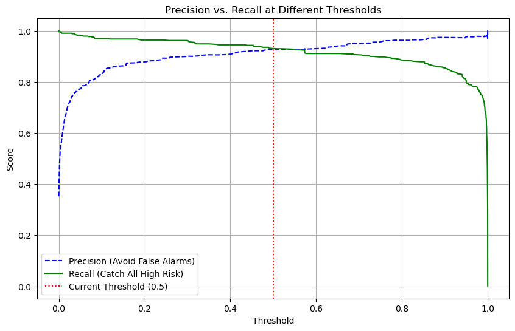
16. from sklearn.model_selection import StratifiedKFold#
from sklearn.model_selection import StratifiedKFold
# Configuration
kf = StratifiedKFold(n_splits=5, shuffle=True, random_state=42)
fold_no = 1
cv_scores = []
print("--- Starting 5-Fold Cross-Validation ---")
for train_idx, val_idx in kf.split(X_padded, Y):
# Split data
X_train_cv, X_val_cv = X_padded[train_idx], X_padded[val_idx]
Y_train_cv, Y_val_cv = Y[train_idx], Y[val_idx]
# Rebuild a fresh model for each fold
model_cv = Sequential([
Embedding(MAX_WORDS, 64, input_length=MAX_LEN),
SpatialDropout1D(0.2),
GRU(64), # Simplified to reduce overfitting
Dense(1, activation='sigmoid')
])
model_cv.compile(optimizer='adam', loss='binary_crossentropy', metrics=['accuracy'])
# Train
model_cv.fit(X_train_cv, Y_train_cv, epochs=5, batch_size=32, verbose=0)
# Evaluate
scores = model_cv.evaluate(X_val_cv, Y_val_cv, verbose=0)
print(f"Fold {fold_no} Accuracy: {scores[1]:.4f}")
cv_scores.append(scores[1])
fold_no += 1
print(f"\nAverage CV Accuracy: {np.mean(cv_scores):.4f} (+/- {np.std(cv_scores):.4f})")
--- Starting 5-Fold Cross-Validation ---
/opt/miniconda3/envs/drug_analysis/lib/python3.10/site-packages/keras/src/layers/core/embedding.py:97: UserWarning: Argument `input_length` is deprecated. Just remove it.
warnings.warn(
Fold 1 Accuracy: 0.9499
Fold 2 Accuracy: 0.9680
Fold 3 Accuracy: 0.9566
Fold 4 Accuracy: 0.9339
Fold 5 Accuracy: 0.9633
Average CV Accuracy: 0.9543 (+/- 0.0119)
17. Calculate F1-scores for all thresholds#
# Calculate F1-scores for all thresholds
f1_scores = (2 * precisions * recalls) / (precisions + recalls)
# Find the index of the highest F1 score
best_idx = np.argmax(f1_scores)
best_threshold = thresholds[best_idx]
print(f"Optimal Threshold for Balance: {best_threshold:.4f}")
print(f"Best F1 Score: {f1_scores[best_idx]:.4f}")
# Update your prediction function to use this
def predict_safe(desc, side_effects):
prob, _ = predict_high_risk(desc, side_effects, threshold=best_threshold)
label = "HIGH RISK ⚠️" if prob >= best_threshold else "LOW RISK ✅"
return prob, label
Optimal Threshold for Balance: 0.5999
Best F1 Score: 0.9559
18. set new threshold#
# set new threshold
def predict_guardian_angel(description, side_effects):
# Use the threshold found by your F1 analysis
OPTIMAL_THRESHOLD = 0.5999
prob, _ = predict_high_risk(description, side_effects, threshold=OPTIMAL_THRESHOLD)
if prob >= OPTIMAL_THRESHOLD:
status = "⚠️ HIGH RISK"
color = "\033[91m" # Red text for console
else:
status = "✅ LOW RISK"
color = "\033[92m" # Green text for console
print(f"{color}Prediction: {status} (Confidence: {prob:.2%})")
return prob, status
19. ==========================================#
# ==========================================
# PART 5: TRANSFORMERS (Modern AI)
# "The Semantic Vibe Search"
# ==========================================
# Note: You may need to install the library first:
# !pip install sentence-transformers
import pandas as pd
from sentence_transformers import SentenceTransformer, util
import torch
print("--- Starting Part 5: Transformers (Semantic Search) ---")
# 1. PREPARE DATA
# We use the subset that has descriptions (the "medical knowledge")
df = pd.read_csv("data/updated_indian_medicine_data.csv")
df_search = df.dropna(subset=['medicine_desc']).copy().reset_index(drop=True)
# To make it run fast in a notebook, we'll use the first 2000 descriptions
# df_search = df_search.head(2000)
print(f"[0] Knowledge Base ready: {len(df_search)} medicines indexed.")
# 2. LOAD THE TRANSFORMER (The Alchemist)
# Vibe: "Loading a pre-trained brain that already knows the English language."
model = SentenceTransformer('all-MiniLM-L6-v2')
# 3. VECTORIZE THE VIBE (Encoding)
# We turn medical descriptions into "Embeddings" (numerical maps of meaning)
print("[1] Encoding medical knowledge into vector space... (The AI is 'reading' the data)")
descriptions = df_search['medicine_desc'].tolist()
embeddings = model.encode(descriptions, convert_to_tensor=True)
# 4. DEFINE THE SEARCH FUNCTION
def semantic_search(query, top_k=3):
# Vibe: "Turning the user's human words into a mathematical vector"
query_embedding = model.encode(query, convert_to_tensor=True)
# Calculate "Cosine Similarity" (how close the query vibe is to the drug vibe)
hits = util.semantic_search(query_embedding, embeddings, top_k=top_k)
hits = hits[0] # Get results for the first query
print(f"\nSearch Query: '{query}'")
print("-" * 30)
for hit in hits:
idx = hit['corpus_id']
score = hit['score']
medicine = df_search.iloc[idx]
print(f"Medicine: {medicine['name']} (Match Score: {score:.4f})")
# Print a snippet of why it matched
print(f"Vibe: {medicine['medicine_desc'][:150]}...")
print("-" * 10)
# 5. TEST THE MAGIC
# Vibe: "Testing the AI with human language instead of medical keywords."
semantic_search("I have a bad bacterial infection in my lungs")
semantic_search("Something for seasonal allergies and itchy eyes")
semantic_search("Medicine for high blood pressure")
print("\n--- Part 5 Complete. You've built a Transformer-powered Search Engine! ---")
/opt/miniconda3/envs/drug_analysis/lib/python3.10/site-packages/tqdm/auto.py:21: TqdmWarning: IProgress not found. Please update jupyter and ipywidgets. See https://ipywidgets.readthedocs.io/en/stable/user_install.html
from .autonotebook import tqdm as notebook_tqdm
--- Starting Part 5: Transformers (Semantic Search) ---
[0] Knowledge Base ready: 7488 medicines indexed.
[1] Encoding medical knowledge into vector space... (The AI is 'reading' the data)
Search Query: 'I have a bad bacterial infection in my lungs'
------------------------------
Medicine: Amoxycillin 500mg Capsule (Match Score: 0.4629)
Vibe: Amoxycillin 500mg Capsule is a penicillin-type of antibiotic used to treat a variety of bacterial infections. It is effective in infections of the thr...
----------
Medicine: Septran C Tablet (Match Score: 0.4599)
Vibe: Septran C Tablet is an antibiotic medicine used to treat bacterial infections in your body. It is effective in infections of the lungs (eg. pneumonia,...
----------
Medicine: Pentids 400 Tablet (Match Score: 0.4412)
Vibe: Pentids 400 Tablet is an antibiotic used to treat a variety of bacterial infections. It is effective in infections of the throat, ear, nasal sinuses, ...
----------
Search Query: 'Something for seasonal allergies and itchy eyes'
------------------------------
Medicine: Toboxy Eye Drop (Match Score: 0.4475)
Vibe: Toboxy Eye Drop is a combination medicine that is used to treat eye infections. It prevents the growth of the bacteria that cause infection in the eye...
----------
Medicine: Acular LS Ophthalmic Solution (Match Score: 0.4403)
Vibe: Acular LS Ophthalmic Solution is a pain relieving medicine. It helps to treat various conditions of the eye such as seasonal allergies, post operative...
----------
Medicine: Tacroz Forte Solution (Match Score: 0.4377)
Vibe: Tacroz Forte Solution is used to treat eczema (atopic dermatitis). It works by suppressing the activity of certain immune cells that cause inflammatio...
----------
Search Query: 'Medicine for high blood pressure'
------------------------------
Medicine: Arbitel R 40 mg/5 mg Tablet (Match Score: 0.6450)
Vibe: Arbitel R 40 mg/5 mg Tablet is a medicine used to treat hypertension (high blood pressure). It is a combination of two medicines that helps to control...
----------
Medicine: Arbace 40 mg/5 mg Tablet (Match Score: 0.6394)
Vibe: Arbace 40 mg/5 mg Tablet is a medicine used to treat hypertension (high blood pressure). It is a combination of two medicines that helps to control bl...
----------
Medicine: Arbitel R 40 mg/2.5 mg Tablet (Match Score: 0.6356)
Vibe: Arbitel R 40 mg/2.5 mg Tablet is a medicine used to treat hypertension (high blood pressure). It is a combination of two medicines that helps to contr...
----------
--- Part 5 Complete. You've built a Transformer-powered Search Engine! ---
20. ==========================================#
# ==========================================
# PART 6: ANOMALY DETECTION
# "The Glitch in the Matrix"
# ==========================================
import pandas as pd
import numpy as np
from sklearn.ensemble import IsolationForest
import matplotlib.pyplot as plt
import re
# 1. PREPARE THE VIBE (Using Cefixime as our case study)
df = pd.read_csv("data/updated_indian_medicine_data.csv")
# Extract Salt and Dosage using a robust "apply" approach
def extract_salt(comp):
return str(comp).split(' (')[0].strip()
def extract_dosage(comp):
match = re.search(r'\((\d*\.?\d+)\s*[a-zA-Z]+\)', str(comp))
return float(match.group(1)) if match else np.nan
df['Salt_Name'] = df['short_composition1'].apply(extract_salt)
df['Dosage_Value'] = df['short_composition1'].apply(extract_dosage)
# Focus on Cefixime to find outliers in a single "neighborhood"
df_salt = df[(df['Salt_Name'] == 'Cefixime')].dropna(subset=['Dosage_Value', 'price']).copy()
# 2. THE ANOMALY SEARCH
# Vibe: "If most 200mg tablets cost 100-200 INR, why does this one cost 1,000?"
iso_forest = IsolationForest(contamination=0.02, random_state=42) # We expect 2% anomalies
# We use log price to keep the visualization clean
df_salt['Log_Price'] = np.log1p(df_salt['price'])
# Train the "Glitch Detector"
df_salt['Anomaly_Score'] = iso_forest.fit_predict(df_salt[['Dosage_Value', 'Log_Price']])
# -1 = Anomaly, 1 = Normal
anomalies = df_salt[df_salt['Anomaly_Score'] == -1]
normals = df_salt[df_salt['Anomaly_Score'] == 1]
print(f"--- Glitch Report for Cefixime ---")
print(f"Total Products: {len(df_salt)}")
print(f"Anomalies Found: {len(anomalies)}")
# 3. VISUALIZING THE GLITCH
plt.figure(figsize=(12, 7))
plt.scatter(normals['Dosage_Value'], normals['price'], color='lightgrey', alpha=0.4, label='Normal Vibe')
plt.scatter(anomalies['Dosage_Value'], anomalies['price'], color='red', edgecolor='black', s=60, label='The Glitch')
plt.title('Glitch in the Matrix: Finding Price Anomalies for Cefixime', fontsize=15)
plt.xlabel('Dosage Value (mg)')
plt.ylabel('Price (INR)')
plt.legend()
plt.grid(True, alpha=0.2)
plt.show()
# 4. SHOW THE TOP GLITCHES
print("\n--- Top 5 Most Expensive 'Glitches' ---")
print(anomalies.sort_values(by='price', ascending=False)[['name', 'Dosage_Value', 'price', 'manufacturer_name']].head(5))
--- Glitch Report for Cefixime ---
Total Products: 8387
Anomalies Found: 163
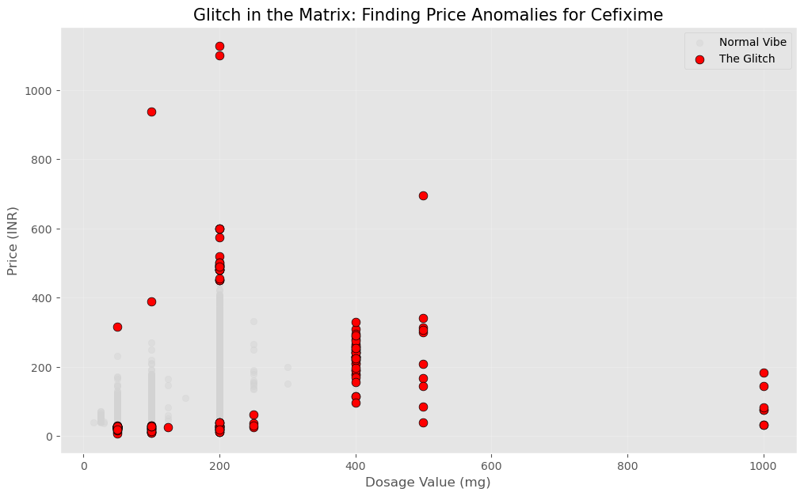
--- Top 5 Most Expensive 'Glitches' ---
name Dosage_Value price \
246763 Zim 200mg Tablet 200.0 1126.73
175936 Prifix 200mg Tablet 200.0 1100.00
93731 Fiximark 100mg Tablet 100.0 937.50
36609 CF3 O 500mg Tablet 500.0 696.00
207070 Sumcef LZ 200mg/600mg Tablet 200.0 600.00
manufacturer_name
246763 Troikaa Pharmaceuticals Ltd
175936 Priya Life Science
93731 Glenmark Pharmaceuticals Ltd
36609 Care Benzorganics Pvt Ltd
207070 Smile Healthcare
21. ==========================================#
# ==========================================
# PART 7: SENTIMENT & INTENSITY ANALYSIS
# "The Side Effect Scare Scale"
# ==========================================
import pandas as pd
import numpy as np
import matplotlib.pyplot as plt
import seaborn as sns
# 1. LOAD AND FILTER
# We only use rows that have reported side effects
df = pd.read_csv("data/updated_indian_medicine_data.csv")
df_se = df.dropna(subset=['side_effects']).copy()
print(f"--- Starting Part 7: The Scare Scale ---")
# 2. THE SEVERITY DICTIONARY (Vibe: "Quantifying the Fear")
# We assign 'weights' to specific medical terms.
severity_map = {
'nausea': 1, 'headache': 1, 'fatigue': 1, 'sleepiness': 1, # Mild
'vomiting': 3, 'diarrhea': 3, 'rash': 3, 'hives': 3, # Moderate
'blurred vision': 7, 'chest pain': 7, 'tremor': 7, # High
'liver damage': 15, 'kidney failure': 15, 'seizures': 15, # Severe
'hallucination': 15, 'anaphylaxis': 15
}
def calculate_scare_score(text):
"""Checks for keywords and sums their severity weights."""
if pd.isna(text): return 0
text = str(text).lower()
score = 0
for word, weight in severity_map.items():
if word in text:
score += weight
return score
# 3. SCORING THE MEDICINES
# Vibe: "Turning a list of symptoms into a single 'Intensity' number."
df_se['Scare_Score'] = df_se['side_effects'].apply(calculate_scare_score)
# 4. ANALYSIS: DOES RISK EQUAL COST?
correlation = df_se[['Scare_Score', 'price']].corr().iloc[0, 1]
print(f"[1] Correlation between Scare Factor and Price: {correlation:.4f}")
# 5. VISUALIZING THE RESULTS
# We group scores into buckets for a cleaner "Vibe Check"
df_se['Intensity'] = pd.cut(df_se['Scare_Score'], bins=[0, 2, 5, 10, 20, 100],
labels=['Mild', 'Moderate', 'High', 'Very High', 'Extreme'])
avg_price_by_scare = df_se.groupby('Intensity')['price'].mean()
plt.figure(figsize=(10, 6))
avg_price_by_scare.plot(kind='bar', color='darkred', alpha=0.8)
plt.title('Average Price vs. Side Effect Intensity', fontsize=14)
plt.ylabel('Average Price (INR)')
plt.xlabel('The Scare Scale')
plt.xticks(rotation=0)
plt.show()
# 6. THE "SCARIEST" DRUG SPOTLIGHT
scariest = df_se.loc[df_se['Scare_Score'].idxmax()]
print(f"\n--- Spotlight: The Highest Scare Score ---")
print(f"Medicine: {scariest['name']}")
print(f"Score: {scariest['Scare_Score']}")
print(f"Reported Effects: {scariest['side_effects']}")
--- Starting Part 7: The Scare Scale ---
[1] Correlation between Scare Factor and Price: 0.0271
/var/folders/w1/_ftnzz4s0jdb0cyn80m370dr0000gn/T/ipykernel_89159/1444628685.py:51: FutureWarning: The default of observed=False is deprecated and will be changed to True in a future version of pandas. Pass observed=False to retain current behavior or observed=True to adopt the future default and silence this warning.
avg_price_by_scare = df_se.groupby('Intensity')['price'].mean()
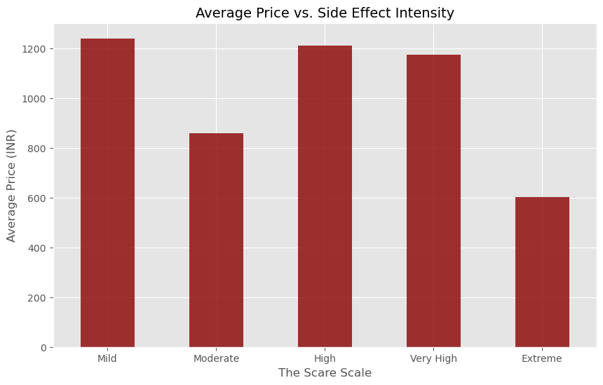
--- Spotlight: The Highest Scare Score ---
Medicine: Aneket 10mg Injection
Score: 37
Reported Effects: Rash,Erythema (skin redness),Vomiting,Nausea,Agitation,Nightmare,Abnormal behavior,Double vision,Hallucination,Increased respiratory rate ,High blood pressure,Confusion,Nystagmus (involuntary eye movement),Muscle coordination impaired,Tonic-clonic seizures,Tachycardia